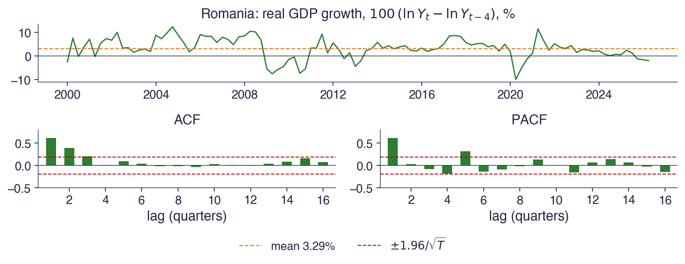

Bucharest University of Economic Studies IDA Institute Digital Assets Blockchain Research Center AI4EFin Artificial Intelligence for Energy Finance Romanian Academy, Institute for Economic Forecasting MSCA Digital Finance
Question: a stationary series is correlated with its own past; which small model captures this memory and turns it into forecasts with honest uncertainty?
the answer of Box and Jenkins: ARMA(\(p,q\)) models, a few parameters instead of infinitely many Wold weights
Route of the chapter
AR(\(p\)) and MA(\(q\)): stationarity, invertibility, characteristic roots, ACF and PACF
ARMA(\(p,q\)): the causal MA(\(\infty\)) form, the impulse responses, identification
estimation (Yule–Walker, conditional least squares, maximum likelihood), AIC and BIC, residual diagnostics
forecasting and the Box–Jenkins method on Romanian GDP, inflation, BET, EUR/RON and the sunspots
Seminar 2 comes before this lecture: it gives the formulas; here we derive them and use them on data
If we take a curve representing a simple harmonic function of the time, and superpose on the ordinates small random errors, the only effect is to make the graph somewhat irregular, leaving the suggestion of periodicity still quite clear to the eye.
Yule (1927) contrasted this picture with a different mechanism: a pendulum whose motion is disturbed by random shocks. In the first picture the cycle is a fixed function of time and the errors only blur it. In the second the shocks enter the dynamics, every shock changes the future path, and the series is correlated with its own past. Yule fitted this second mechanism to the yearly sunspot numbers with two coefficients, and the result was the first autoregression. The chapter starts from the same question: a stationary series is correlated with its own past, and a small model is needed that captures this memory and turns it into forecasts with honest uncertainty.
The Wold decomposition from Chapter 1 shows that every stationary, purely nondeterministic process is an infinite weighted sum of past shocks. It does not say how to estimate infinitely many weights from \(T\) observations. The ARMA(\(p,q\)) models of Box, Jenkins and Reinsel (2008) write these weights as the ratio of two short polynomials, with \(p + q + 2\) parameters. The chapter derives their properties (stationarity, invertibility, autocorrelations, impulse responses), the estimators, the information criteria, the residual tests and the forecasts, and then applies the whole method to real series.
The main application is the annual growth of Romanian real GDP, 106 quarters from 2000Q1 to 2026Q2. Its autocorrelation function cuts off after lag 3, the Bayesian information criterion (BIC) chooses an MA(3) model, and the MA(3) leaves residuals without autocorrelation, but with fat tails due to 2020. The same tools are then applied to Romanian inflation, to the daily returns of the BET index and of the EUR/RON exchange rate, and to Yule's sunspots.

Annual growth of Romanian real GDP, 2000Q1–2026Q2, in % (top), with its sample autocorrelation function (ACF) and partial autocorrelation function (PACF) for lags of 1 to 16 quarters (bottom); the red dashed lines are the band \(\pm 1.96/\sqrt{T} = \pm 0.19\).
What you will be able to do
Check the stationarity of an AR(\(p\)) and the invertibility of an MA(\(q\)) from the roots of their polynomials.
Derive the mean, the autocovariances and the \(\psi\) weights of AR(1), AR(2), MA(\(q\)) and ARMA(1,1).
Identify candidate orders from the ACF and the PACF, and choose among them with AIC and BIC.
Estimate ARMA models by Yule–Walker, conditional least squares and maximum likelihood, and interpret the output.
Test the residuals with Ljung–Box on \(m - p - q\) degrees of freedom and with Jarque–Bera.
Forecast with ARMA models, compute the intervals and explain mean reversion.
Chapter plan
From Chapter 1 to ARMA modelsStationarity, white noise, the lag operator, the Wold decomposition and the problem of infinitely many weights.
Autoregressive modelsAR(1) and AR(\(p\)): stationarity from the roots, moments, the AR(2) triangle and the cut-off of the PACF.
Moving-average modelsMA(\(q\)): the cut-off of the ACF, the bound on \(\rho(1)\) and invertibility.
ARMA(p,q) modelsThe \(\psi\) weights, impulse responses, common factors and the ACF–PACF identification table.
EstimationYule–Walker, conditional least squares and Gaussian maximum likelihood, and their small-sample behaviour.
SummaryKey takeaways, key formulas and self-assessment.
From Chapter 1 to ARMA models
This section collects the tools from Chapter 1 that the chapter uses and states the problem that ARMA models solve: the Wold decomposition describes every stationary process, but with infinitely many weights.
A process \(X_t\) is weakly stationary when its mean \(\mu\) is constant and its autocovariance \(\gamma(h) = \mathrm{Cov}(X_t, X_{t+h})\) depends only on the lag \(h\), not on the date \(t\). The autocorrelation function (ACF), \(\rho(h) = \gamma(h)/\gamma(0)\), rescales the autocovariances to the interval \([-1, 1]\). The partial autocorrelation function (PACF), \(\phi_{hh}\), measures the correlation between \(X_t\) and \(X_{t+h}\) after the linear effect of the intermediate values \(X_{t+1}, \dots, X_{t+h-1}\) has been removed. These two functions are the identification tools of the chapter: their shapes indicate which model to fit.
White noise, \(\varepsilon_t \sim \mathrm{WN}(0, \sigma^2)\), has mean 0, variance \(\sigma^2\) and no autocorrelation at any nonzero lag. It is the raw material of every model in the chapter: each model is a linear filter applied to white noise. The lag operator shifts a series back in time, \(LX_t = X_{t-1}\) and \(L^kX_t = X_{t-k}\). A polynomial in \(L\), such as \(1 - 0.5L\), therefore acts on a series as a weighted sum of its lags, and the algebra of polynomials (products, ratios, roots) becomes the algebra of models.
The Wold decomposition (Wold, 1938) connects these pieces. Every stationary, purely nondeterministic process can be written as \(X_t = \mu + \sum_{j \ge 0}\psi_j\varepsilon_{t-j}\), with \(\psi_0 = 1\) and \(\sum_j\psi_j^2 < \infty\). "Purely nondeterministic" excludes components that the infinite past predicts exactly, such as a fixed sine wave. The theorem says that such a process is a moving average of infinite order of its past shocks; the rest of the chapter writes this sum with few parameters.
In brief
Weak stationarity: constant mean \(\mu\) and autocovariance \(\gamma(h) = \mathrm{Cov}(X_t, X_{t+h})\) that depends only on the lag \(h\)
ACF \(\rho(h) = \gamma(h)/\gamma(0)\); PACF \(\phi_{hh}\) = correlation of \(X_t\) and \(X_{t+h}\) after removing \(X_{t+1}, \dots, X_{t+h-1}\)
White noise\(\varepsilon_t \sim \mathrm{WN}(0, \sigma^2)\): mean 0, variance \(\sigma^2\), no autocorrelation
the lag operator: \(LX_t = X_{t-1}\), \(L^kX_t = X_{t-k}\); polynomials in \(L\) act on series
Wold decomposition (Wold (1938)): every stationary, purely nondeterministic process is \(X_t = \mu + \sum_{j \ge 0}\psi_j\varepsilon_{t-j}\), \(\psi_0 = 1\), \(\sum_j\psi_j^2 < \infty\)
details and charts: Chapter 1, sections on the lag operator, Wold and the sample ACF and PACF
The Wold decomposition says what a stationary process looks like, not how to estimate it. The weights \(\psi_1, \psi_2, \dots\) are infinitely many unknowns, and the sample has only \(T\) observations. Truncating the sum at a long lag would still leave many parameters, each estimated with a large error.
The idea is to write the lag polynomial \(\psi(L) = \sum_j\psi_jL^j\) as a ratio of two short polynomials, \(\psi(L) = \theta(L)/\phi(L)\). Multiplying both sides of the Wold form by \(\phi(L)\) gives the ARMA(\(p,q\)) model
The model has \(p + q + 2\) parameters: the \(p\) autoregressive coefficients, the \(q\) moving-average coefficients, the mean \(\mu\) and the noise variance \(\sigma^2\). One parameter can already generate infinitely many weights: \(1/(1 - 0.8L) = 1 + 0.8L + 0.64L^2 + \dots\).
A ratio of two low-order polynomials approximates almost any smooth \(\psi(L)\) well. It reproduces geometric decays, damped oscillations and weights that stop after a finite lag, the shapes met in practice. The principle that guides the choice of \(p\) and \(q\) is parsimony: the smallest model whose residuals are white noise. Every additional parameter adds estimation error, and beyond the point where the residuals are white noise it no longer improves the forecasts.
In brief
Wold says what a stationary process looks like, not how to estimate it
\(\psi_1, \psi_2, \dots\): infinitely many unknowns, and only \(T\) observations
Idea: write \(\psi(L) = \sum_j\psi_jL^j\) as a ratio of two short polynomials
then \(\phi(L)(X_t - \mu) = \theta(L)\varepsilon_t\): the ARMA(\(p,q\)) model with \(p + q + 2\) parameters (\(\phi\), \(\theta\), \(\mu\), \(\sigma^2\))
A rational function approximates almost any smooth \(\psi(L)\) well with small \(p\) and \(q\)
the principle of parsimony: the smallest model that leaves white-noise residuals
The autoregressive model AR(\(p\)) makes today's value depend on the last \(p\) values of the series and on a new shock: \(X_t = c + \phi_1X_{t-1} + \dots + \phi_pX_{t-p} + \varepsilon_t\). It goes back to Yule (1927) and his analysis of the sunspots. The moving-average model MA(\(q\)) makes today's value depend on the last \(q\) shocks: \(X_t = \mu + \varepsilon_t + \theta_1\varepsilon_{t-1} + \dots + \theta_q\varepsilon_{t-q}\).Slutzky (1937) showed that such sums of random causes produce series that look cyclical. The ARMA(\(p,q\)) model contains both parts; Box, Jenkins and Reinsel (2008), whose first edition appeared in 1970, turned it into a complete method of identification, estimation, checking and forecasting.
In the autoregressive form, \(c\) is the intercept, not the mean. Taking expectations on both sides and using stationarity (\(E[X_t] = E[X_{t-k}] = \mu\)) gives \(\mu = c + (\phi_1 + \dots + \phi_p)\mu\), so \(\mu = c/(1 - \phi_1 - \dots - \phi_p)\). The distinction matters in practice: for \(X_t = 2 + 0.8X_{t-1} + \varepsilon_t\) the intercept is 2 and the mean is 10, and software output may report either.
Throughout the chapter, \(\varepsilon_t\) is white noise; this is enough for the means, the autocovariances and the point forecasts. The likelihood and the forecast intervals require more: \(\varepsilon_t\) independent and identically distributed (i.i.d.) \(N(0, \sigma^2)\). The difference between the two assumptions appears in the case study, where the residuals of the GDP model are uncorrelated but not Normal: the point estimates remain valid, the Normal intervals do not.
In brief
AR(\(p\)), autoregressive: today depends on the last \(p\) values of the series
\(c\) is the intercept; the mean is \(\mu = c/(1 - \phi_1 - \dots - \phi_p)\), not \(c\)
Throughout: \(\varepsilon_t \sim \mathrm{WN}(0, \sigma^2)\), and for likelihood and intervals \(\varepsilon_t\) i.i.d. \(N(0, \sigma^2)\) (independent and identically distributed)
Section summary
The Wold decomposition guarantees that every stationary, purely nondeterministic process is a filter of white noise, and the ARMA model (2.1) writes this filter as \(\theta(L)/\phi(L)\), with \(p + q + 2\) parameters. The next section studies the autoregressive part alone, the section after it the moving-average part, and the fourth section the two together.
Autoregressive models
An autoregressive model regresses the series on its own past. The section derives the moments of the AR(1) model, extends the stationarity condition to AR(\(p\)) through the roots of the characteristic polynomial, maps the stationary AR(2) models in the plane of their coefficients and shows the property that identifies an AR(\(p\)) in data: its PACF cuts off after lag \(p\).
The AR(1) model is \(X_t = c + \phi X_{t-1} + \varepsilon_t\), or, with the lag operator, \((1 - \phi L)X_t = c + \varepsilon_t\). Written in deviations from the mean, \(X_t - \mu = \phi(X_{t-1} - \mu) + \varepsilon_t\): the coefficient \(\phi\) is the share of today's deviation from the mean that survives until tomorrow. With \(\phi = 0.8\), a deviation of 2 today is expected to be 1.6 tomorrow.
Substituting the equation into itself \(k\) times expresses \(X_t\) through a distant value and the shocks in between (first line); for \(|\phi| < 1\) and \(k \to \infty\) this gives the second line:
When \(|\phi| < 1\), the term \(\phi^kX_{t-k}\) vanishes: the process forgets its starting point. The limit is the Wold form with \(\psi_j = \phi^j\), called the causal or MA(\(\infty\)) representation, because \(X_t\) depends only on present and past shocks.
The condition \(|\phi| < 1\) is essential. With \(\phi = 1\) the model is the random walk of Chapter 1: shocks never fade, the variance grows with time, and there is no stationary solution. With \(|\phi| > 1\) the backward substitution explodes; a stationary solution exists only if \(X_t\) is written as a function of future shocks, which is useless for forecasting from the past, so this case is excluded.
In brief
\(X_t = c + \phi X_{t-1} + \varepsilon_t\), or \((1 - \phi L)X_t = c + \varepsilon_t\)
\(\phi\): the share of today's deviation from the mean that survives until tomorrow
The mean follows from taking expectations of the model. Stationarity is used here: \(E[X_t] = E[X_{t-1}] = \mu\), so \(\mu = c + \phi\mu\) and \(\mu = c/(1 - \phi)\). The variance follows in the same way. Since \(\varepsilon_t\) is uncorrelated with \(X_{t-1}\), which by (2.2) depends only on shocks up to \(t - 1\), the variance of the sum is the sum of the variances: \(\gamma(0) = \phi^2\gamma(0) + \sigma^2\).
The variance grows without bound as \(|\phi| \to 1\): a persistent series wanders far from its mean, although each shock has the same variance \(\sigma^2\). The autocovariances come from multiplying \(X_t - \mu = \phi(X_{t-1} - \mu) + \varepsilon_t\) by \(X_{t-h} - \mu\),\(h \ge 1\), and taking expectations; the shock term drops out because \(\varepsilon_t\) is uncorrelated with the past. The result is the recursion \(\gamma(h) = \phi\gamma(h - 1)\), so \(\gamma(h) = \phi^h\gamma(0)\) and \(\rho(h) = \phi^h\): the ACF decays geometrically, with alternating signs when \(\phi < 0\).
A useful summary of persistence is the half-life of a shock, the horizon \(h\) at which half of its effect is gone: \(\phi^h = 1/2\), so \(h = \ln 0.5/\ln\phi\) for \(0 < \phi < 1\). It translates a coefficient into a time span that can be compared across series and frequencies.
In brief
Mean: take expectations, \(\mu = c + \phi\mu\), so \(\mu = c/(1 - \phi)\)
stationarity is used here: \(E[X_t] = E[X_{t-1}]\)
Variance: \(\gamma(0) = \phi^2\gamma(0) + \sigma^2\), since \(\varepsilon_t\) is uncorrelated with \(X_{t-1}\)
\(\gamma(0) = \sigma^2/(1 - \phi^2)\): grows without bound as \(|\phi| \to 1\)
Autocovariances: multiply \(X_t - \mu = \phi(X_{t-1} - \mu) + \varepsilon_t\) by \(X_{t-h} - \mu\), \(h \ge 1\), and take expectations
\(\gamma(h) = \phi\gamma(h - 1)\), so \(\gamma(h) = \phi^h\gamma(0)\) and \(\rho(h) = \phi^h\)
geometric decay; alternating signs if \(\phi < 0\)
Half-life of a shock: the \(h\) with \(\phi^h = 1/2\), i.e. \(h = \ln 0.5/\ln\phi\)
Take \(X_t = 2 + 0.8X_{t-1} + \varepsilon_t\) with \(\sigma^2 = 1\). The model is stationary because \(|\phi| = 0.8 < 1\). Its mean is \(\mu = 2/(1 - 0.8) = 10\): the intercept is 2 and the mean is 10, and confusing the two is a common error when reading software output.
The variance is \(\gamma(0) = 1/(1 - 0.64) = 2.78\), so the series has a standard deviation of about 1.67, larger than the standard deviation 1 of a single shock, because past shocks accumulate. The autocorrelation at lag 3 is \(\rho(3) = 0.8^3 = 0.512\): observations three periods apart have a correlation of 0.512.
The half-life is \(\ln 0.5/\ln 0.8 = 3.11\) periods: after about three periods, half of a shock is gone. The \(\psi\) weights are \(1, 0.8, 0.64, 0.512, \dots\), so a unit shock today raises \(X_{t+2}\) by 0.64. For an AR(1) the impulse response \(\psi_j\) and the autocorrelation \(\rho(j)\) are both equal to \(\phi^j\); this coincidence is specific to the AR(1) and does not hold for the other models of the chapter.
Question for the room In Xt = 2 + 0.8Xt−1 + εt, the intercept is 2. Is 2 the mean of the process?
Answer
No: μ = c/(1 − φ) = 2/0.2 = 10. The variance is γ(0) = 1/(1 − 0.64) = 2.78, ρ(3) = 0.512, and the half-life is 3.11 periods. With the same c and φ = 0.9, the mean rises to 20, γ(0) to 5.26 and the half-life to 6.58 periods.
Question for the room With the same 200 shocks, the ▶ button raises φ in the left panel from 0 to 0.99; φ in the other two panels follows in proportion, up to 0.33 and −0.77. What happens in the left panel to ρ̂(1) and to the sample variance?
Answer
Both rise: ρ̂(1) goes from 0.10 to 0.95, and the sample variance from 1.04 to 14.5. The theoretical variance, 1/(1 − φ²), rises faster: 5.26 at φ = 0.9 and 50.3 at φ = 0.99. At φ = 0.9 the sample gives 4.98, below the theoretical value: a short path of a persistent process does not cover all its variation. With φ = −0.7 the sign of the autocorrelations alternates: ρ̂(1) = −0.58, ρ̂(2) = 0.34; at the end of the sweep, with φ = −0.77, ρ̂(1) = −0.66 and ρ̂(2) = 0.44.
The chart shows three simulated AR(1) series of 200 observations, with \(\phi = 0.9\),\(0.3\) and \(-0.7\). All three are driven by the same 200 shocks, so every difference between the paths in the top row comes from \(\phi\) alone. The vertical scale is the same in the three panels, which makes the difference in variance visible.
The bottom row shows, for lags 1 to 15, the sample ACF of each path (bars) and the theoretical ACF \(\rho(h) = \phi^h\) (orange dots). The red dashed lines are the band \(\pm 1.96/\sqrt{T}\), the approximate 95% band for the sample autocorrelations of white noise. A bar outside the band is an autocorrelation that this check separates from noise; the gap between a bar and its dot is the sampling error of one series of length 200.
In brief
The same 200 shocks, \(\phi = 0.9\), \(0.3\), \(-0.7\); bottom: sample ACF (bars) and \(\rho(h) = \phi^h\) (dots)
With \(\phi = 0.9\) the series makes long swings away from 0. Its sample first-order autocorrelation is \(\hat\rho(1) = 0.88\), and its sample variance is 4.98, against the theoretical value \(1/(1 - 0.81) = 5.26\). Over a window of a few dozen observations such a series looks like a trend: strong persistence and a deterministic trend are hard to tell apart by eye, which is why Chapter 3 introduces formal tests.
With \(\phi = 0.3\) the series is close to white noise: only \(\hat\rho(1) = 0.35\) is clearly outside the band, and the sample variance is 1.18, against a theoretical 1.10. With \(\phi = -0.7\) the series zig-zags: \(\hat\rho(1) = -0.58\) and \(\hat\rho(2) = 0.34\), with alternating signs. In economic data, negative autocorrelation appears with overshooting followed by correction, or with a measurement error that is corrected in the next period.
In the panel for \(\phi = 0.9\), the sample ACF lies below the theoretical one at long lags. With \(T = 200\), sample autocorrelations of a persistent series are biased towards zero. The same small-sample bias affects the estimators of \(\phi\), as the estimation section shows.
In brief
\(\phi = 0.9\): long swings away from 0; sample \(\hat\rho(1) = 0.88\), variance 4.98 (theory 5.26)
strong persistence looks like a trend over short windows
\(\phi = 0.3\): close to white noise; only \(\hat\rho(1) = 0.35\) is clearly outside the band
The AR(\(p\)) model is \(\phi(L)X_t = c + \varepsilon_t\), with the characteristic polynomial \(\phi(z) = 1 - \phi_1z - \dots - \phi_pz^p\) in a complex variable \(z\). By the fundamental theorem of algebra the polynomial factorises into \(p\) linear factors:
The \(z_i\) are the roots of \(\phi(z) = 0\), and the \(\lambda_i\) are the inverse roots. Each factor \(1 - \lambda_iL\) is the operator of an AR(1) with coefficient \(\lambda_i\), so an AR(\(p\)) is a product of \(p\) AR(1) filters, some of which may have complex coefficients.
The stationarity (causality) condition is that all roots lie outside the unit circle, \(|z_i| > 1\), or equivalently that all inverse roots lie inside it, \(|\lambda_i| < 1\); software usually plots the inverse roots. The reason is the AR(1) result applied to each factor: \(1/(1 - \lambda L) = \sum_j\lambda^jL^j\) converges only if \(|\lambda| < 1\), and the product of the \(p\) convergent series is the causal MA(\(\infty\)) form.
A root on the unit circle, \(|z| = 1\), for example \(z = 1\), is a unit root: the process is not stationary, and Chapter 3 treats this case. A quick necessary check is \(\phi_1 + \dots + \phi_p < 1\), that is \(\phi(1) > 0\). Since \(\phi(0) = 1 > 0\), a value \(\phi(1) \le 0\) would place a real root between 0 and 1, inside the circle. The check is not sufficient: a model can pass it and still have a root inside the circle, so the roots themselves must be computed.
In brief
\(\phi(L)X_t = c + \varepsilon_t\), with \(\phi(z) = 1 - \phi_1z - \dots - \phi_pz^p\), a polynomial in a complex number \(z\)
factorise: \(\phi(z) = (1 - \lambda_1z)\cdots(1 - \lambda_pz)\), where \(z_i = 1/\lambda_i\) are the roots
Stationarity (causality) condition: all roots of \(\phi(z) = 0\) lie outside the unit circle, \(|z_i| > 1\)
equivalently: all inverse roots\(\lambda_i\) lie inside, \(|\lambda_i| < 1\) (the form shown by software)
reason: \(1/(1 - \lambda L) = \sum_j\lambda^jL^j\) converges only if \(|\lambda| < 1\); each factor is an AR(1)
A root on the circle (\(|z| = 1\), e.g. \(z = 1\)) is a unit root: non-stationarity, the topic of Chapter 3
They define a triangle in the plane \((\phi_1, \phi_2)\) with vertices \((-2, -1)\),\((2, -1)\) and \((0, 1)\). Every point inside the triangle is a stationary AR(2), and every point outside has at least one root on or inside the unit circle.
The roots are complex when \(\phi_1^2 + 4\phi_2 < 0\), below a parabola inside the triangle. The ACF is then a damped cosine: it produces pseudo-cycles of average length \(2\pi/\arccos\big(\phi_1/(2\sqrt{-\phi_2})\big)\) periods, and their amplitude shrinks by the factor \(\sqrt{-\phi_2}\) per period, the modulus of the inverse roots. The cycles are "pseudo" because the shocks keep changing their amplitude and phase; the series has no fixed period, only a typical one.
The ACF of an AR(2) comes from the Yule–Walker equations: multiply the model by \(X_{t-h}\), take expectations and divide by \(\gamma(0)\).
The first equation comes from \(\rho(1) = \phi_1 + \phi_2\rho(1)\), using \(\rho(-1) = \rho(1)\). The second shows that the ACF obeys the same recursion as the process without its shocks, so its shape (geometric decay or damped wave) is set by the roots of \(\phi(z)\).
In brief
\(X_t = \phi_1X_{t-1} + \phi_2X_{t-2} + \varepsilon_t\) is stationary if and only if
Question for the room Example B has φ₁ = 1.0. Is the process stationary?
Answer
Yes. The discriminant φ₁² + 4φ₂ = −1.4 is negative, the roots are complex, 0.833 ± 0.986i, with modulus 1.291 > 1 (the inverse roots have modulus 0.775). The triangle conditions hold: 0.4 < 1, −1.6 < 1, 0.6 < 1. Conversely, in example C both coefficients are below 1, yet the root 0.936 lies inside the unit circle.
Question for the room In example C, φ₁ = 0.6 and φ₂ = 0.5 are both below 1. Is the process stationary?
Answer
No. φ₁ + φ₂ = 1.1 > 1, so the point lies outside the triangle. The roots of 1 − 0.6z − 0.5z² are −2.14 and 0.936; the second lies inside the unit circle (its inverse root has modulus 1.068). Stationarity is read from the roots, not from the coefficients one at a time. B has complex roots, 0.833 ± 0.986i, with modulus 1.291: its ACF is a wave with a period of 7.2 lags, damped by 0.775 per lag.
The left panel draws the stationarity triangle (2.5), shaded, and the dashed parabola \(\phi_1^2 + 4\phi_2 = 0\) that separates real roots (above it) from complex roots (below it). Four models are marked: A with \(\phi = (0.5, 0.3)\), B with \((1.0, -0.6)\), C with \((0.6, 0.5)\), and the AR(2) that Yule fitted to the sunspots, estimated in Section 10. A lies inside the triangle in the region of real roots, B and the sunspots inside in the region of complex roots, and C just outside the right edge.
The middle panel shows the inverse roots \(\lambda_i\) in the complex plane, with the unit circle. A model is stationary when all its points lie inside the circle. A has two real inverse roots inside; B and the sunspots each have a pair of complex conjugate inverse roots inside; C has one inverse root on the real axis outside the circle.
The right panel shows the theoretical ACF of A and B up to lag 30. A decays smoothly and slowly; B oscillates with decreasing amplitude, the damped cosine of complex roots.
Model A has the real roots \(-2.84\) and \(1.17\), both outside the unit circle, so it is stationary. Its autocorrelations, from (2.6), are \(\rho(1) = 0.5/0.7 = 0.714\) and \(\rho(2) = 0.5\rho(1) + 0.3 = 0.657\): a slow, smooth decay, dominated by the root 1.17, the one closest to the circle.
Model B has the complex roots \(0.833 \pm 0.986\,i\), with modulus \(1.291 > 1\), so it is stationary. Its ACF is a wave with a period of 7.2 lags, damped by the factor 0.775 per lag. Such a model generates a stochastic cycle: oscillations with a typical length but random amplitude and timing.
Model C has \(\phi_1 + \phi_2 = 1.1 > 1\), so it fails the necessary condition; one root is \(0.936 < 1\), inside the circle, and the process is explosive. Each coefficient is below 1, yet the process explodes: stationarity is a property of the roots, not of the coefficients taken one at a time. Complex roots are the mechanism by which linear models produce business cycles and, in Section 10, the 11-year solar cycle.
In brief
A: real roots \(\ensuremath{-}2.84\) and \(1.17\), both outside the circle: stationary
The partial autocorrelation \(\phi_{hh}\) is the last coefficient in the best linear prediction of \(X_t\) from \(X_{t-1}, \dots, X_{t-h}\) (Chapter 1). It does not require a regression for every \(h\): the Durbin–Levinson recursion (Durbin, 1960) computes all the \(\phi_{hh}\) from the ACF.
For an AR(\(p\)) and \(h > p\), the best linear predictor of \(X_t\) from \(h\) lags is the model itself, \(\phi_1X_{t-1} + \dots + \phi_pX_{t-p}\): the error \(\varepsilon_t\) is uncorrelated with all past values, so no additional lag can improve the prediction. The coefficients of lags \(p + 1, \dots, h\) are therefore zero, which gives \(\phi_{hh} = 0\) for \(h > p\), and \(\phi_{pp} = \phi_p\).
This is the identification rule for autoregressions: when the ACF decays gradually and the PACF has \(p\) significant values and then stays inside the band, the candidate is an AR(\(p\)). For the sample PACF of an AR(\(p\)) at lags \(h > p\) the band is \(\pm 1.96/\sqrt{T}\). With many lags examined, about one value in twenty falls outside the band by chance, so an isolated value just outside it at a long lag is weak evidence.
In brief
\(\phi_{hh}\) = the last coefficient in the best linear prediction of \(X_t\) from \(X_{t-1}, \dots, X_{t-h}\) (Chapter 1)
computed from the ACF by the Durbin–Levinson recursion (Durbin (1960))
For an AR(\(p\)) and \(h > p\), the best predictor is the model itself: \(\phi_1X_{t-1} + \dots + \phi_pX_{t-p}\)
so \(\phi_{hh} = 0\) for \(h > p\), and \(\phi_{pp} = \phi_p\)
Identification rule: ACF decays gradually, PACF has \(p\) spikes and then stays inside the band: AR(\(p\))
band for the sample PACF of an AR(\(p\)) at lags \(h > p\): \(\pm 1.96/\sqrt{T}\)
An AR(\(p\)),\(\phi(L)X_t = c + \varepsilon_t\), is stationary if and only if all roots of \(\phi(z)\) lie outside the unit circle; checking the coefficients one by one is not enough. Its mean is \(\mu = c/\phi(1)\), and its ACF follows the Yule–Walker recursion (2.6), which produces a mix of geometric decays (real roots) and damped waves (complex roots).
The AR(1) is the building block: \(\rho(h) = \psi_h = \phi^h\) and the half-life of a shock is \(\ln 0.5/\ln\phi\). In data, an AR(\(p\)) is recognised by its PACF, which cuts off after lag \(p\).
In brief
AR(\(p\)): \(\phi(L)X_t = c + \varepsilon_t\); stationary iff all roots of \(\phi(z)\) lie outside the unit circle
Mean \(\mu = c/\phi(1)\); ACF from the Yule–Walker recursion, a mix of geometric decays and damped waves
PACF cuts off after lag \(p\): the signature of an AR(\(p\))
Section summary
Autoregressive models describe memory through the past values of the series. Stationarity requires the roots of \(\phi(z)\) outside the unit circle (2.4); for an AR(2) this is the triangle (2.5). Real roots produce geometric decays of the ACF, complex roots damped waves and stochastic cycles. The signature of an AR(\(p\)) in data is a PACF that cuts off after lag \(p\). The next section studies the opposite case: memory through past shocks.
Moving-average models
A moving-average model describes the series as a weighted sum of the current and the last \(q\) shocks. Such a model is always stationary, and its ACF cuts off after lag \(q\). The new issue is invertibility: two different MA models can have the same autocorrelations, and a convention is needed to choose between them.
The MA(\(q\)) model is \(X_t = \mu + \theta(L)\varepsilon_t = \mu + \varepsilon_t + \theta_1\varepsilon_{t-1} + \dots + \theta_q\varepsilon_{t-q}\). It is a Wold sum with finitely many nonzero weights, \(\psi_j = \theta_j\) for \(j \le q\) and 0 beyond. A finite sum of white-noise terms always has a constant mean and finite variance, so an MA(\(q\)) is stationary for any value of the coefficients.
The moments follow from the fact that the shocks are uncorrelated. With \(\theta_0 = 1\),\(E[X_t] = \mu\) and
\[\begin{gathered}\gamma(h) = \sigma^2\sum_{j=0}^{q-h}\theta_j\theta_{j+h}, \quad 0 \le h \le q, \\ \gamma(h) = 0, \quad h > q.\end{gathered}\]
(2.7)
Two values more than \(q\) periods apart contain no common shock, so their covariance is zero.
The identification rule is the mirror image of the AR rule: the ACF cuts off after lag \(q\), and the PACF decays gradually. For the sample ACF at lags \(h > q\), Bartlett's formula gives the band \(\pm 1.96\sqrt{(1 + 2\sum_{j=1}^{q}\hat\rho(j)^2)/T}\). It is wider than \(\pm 1.96/\sqrt{T}\), because the sampling variance of an autocorrelation beyond lag \(q\) depends on the autocorrelations up to lag \(q\); with the narrow band, a sample ACF beyond the true order would look significant too often.
Question for the room The ▶ button raises θ from 0 to 2. Can an MA(1) have ρ(1) above 0.5?
Answer
No. ρ(1) = θ/(1 + θ²) reaches its maximum of 0.5 at θ = 1 and then falls: at θ = 2 it is 0.4, the same as at θ = 0.5. At θ = ±0.8 the theoretical values are ±0.488, and the sample values, with T = 300, are 0.56 and −0.51. The ACF has a single non-zero value, while the PACF decays: φ̂₂₂ = −0.23 for θ = 0.8.
The chart shows two simulated MA(1) series of \(T = 300\) observations, with \(\theta = 0.8\) (top row) and \(\theta = -0.8\) (bottom row). For each, the left panel is the path, the middle panel the ACF and the right panel the PACF, for lags 1 to 12; the bars are sample values, the orange dots the theoretical values and the red dashed lines the band \(\pm 1.96/\sqrt{T}\).
In both ACF panels there is a single clear value, at lag 1: positive for \(\theta = 0.8\) and negative for \(\theta = -0.8\). The PACF does not cut off: it decays, with alternating signs for \(\theta = 0.8\) and with all values negative for \(\theta = -0.8\). The path with \(\theta = 0.8\) is smoother, because neighbouring values share a shock with the same sign; the path with \(\theta = -0.8\) is more jagged.
In brief
\(T = 300\); the ACF has one spike, the PACF decays (with alternating signs when \(\theta > 0\))
For an MA(1), (2.7) gives \(\rho(1) = \theta/(1 + \theta^2)\), which equals \(\pm 0.488\) for \(\theta = \pm 0.8\), and \(\rho(h) = 0\) for \(h \ge 2\). The sample values are \(\hat\rho(1) = 0.56\) and \(-0.51\); the differences from \(\pm 0.488\) are sampling error with 300 observations.
The PACF does not cut off: for \(\theta = 0.8\) the sample value at lag 2 is \(\hat\phi_{22} = -0.23\). The reason, developed in the next frames, is that an invertible MA(1) can be written as an AR(\(\infty\)): every past value of the series carries a little information about the current shock, so every lag enters the best linear prediction with a nonzero coefficient.
An MA(1) remembers exactly one period: a shock today affects tomorrow's value and is then forgotten. This structure appears in economic data in several ways: overlapping observations, as in the GDP growth rates of Section 9; a measurement error that enters one observation and is corrected in the next; and the bid–ask bounce, in which transaction prices alternate between the bid and the ask, so that consecutive price changes are negatively correlated.
\[\begin{gathered}X_t=\varepsilon_t+\theta\varepsilon_{t-1}:\quad \gamma(0)=\sigma^2(1+\theta^2),\quad \gamma(1)=\theta\sigma^2;\\ (\theta,\sigma^2)\ \text{and}\ (1/\theta,\ \theta^2\sigma^2)\ \text{have the same ACF};\quad \varepsilon_t=\sum_{j\ge0}(-\theta)^jX_{t-j}\end{gathered}\]
Question for the room The ▶ button moves θ from −3 to 3. For which values is the MA(1) invertible, and what happens to the AR(∞) weights at θ = 2?
Answer
For |θ| < 1. At θ = 2 the weights (−θ)j are 1, −2, 4, −8, … and reach 256 at j = 8: the shocks cannot be recovered from the past of the series. The twin representation, θ = 0.5 with σ² = 4, has the weights 1, −0.5, 0.25, … and the same γ(0) = 5, γ(1) = 2.
Question for the room Which other value of θ gives the same ρ(1) = 0.4 as θ = 0.5, and which one do we keep?
Answer
θ = 2 = 1/0.5. The two models have the same ACF (with σ² multiplied by θ²), so the data cannot tell them apart: an identification problem. The invertibility convention, |θ| < 1, keeps θ = 0.5.
The chart plots \(\rho(1) = \theta/(1 + \theta^2)\) for \(\theta\) between \(-4\) and \(4\). The shaded band marks the invertible region \(|\theta| < 1\), and the red dashed lines mark \(\pm 0.5\). Two points are highlighted: \(\theta = 0.5\) and \(\theta = 2\), both with \(\rho(1) = 0.4\).
The curve is odd in \(\theta\), reaches its maximum 0.5 at \(\theta = 1\) and its minimum \(-0.5\) at \(\theta = -1\), and tends to 0 as \(|\theta|\) grows. Every value of \(\rho(1)\) strictly between \(-0.5\) and \(0.5\), other than 0, is reached twice: once inside the shaded region and once outside it.
In brief
\(\rho(1) = \theta/(1 + \theta^2)\) as a function of \(\theta\)
The largest possible value is \(|\rho(1)| = 0.5\), reached at \(\theta = \pm 1\). It follows from \((1 - |\theta|)^2 \ge 0\), which gives \(1 + \theta^2 \ge 2|\theta|\). An MA(1) can therefore never produce \(|\rho(1)| > 0.5\). If a sample ACF shows \(\hat\rho(1) = 0.7\) and nothing significant afterwards, the series is not an MA(1); the candidates are an AR model or an MA(\(q\)) with more terms.
The values \(\theta = 0.5\) and \(\theta = 2\) give the same \(\rho(1) = 0.4\). In general \(\theta\) and \(1/\theta\) give the same ACF: replacing \(\theta\) by \(1/\theta\) leaves \(\theta/(1 + \theta^2)\) unchanged, and the autocovariances also coincide if \(\sigma^2\) is multiplied by \(\theta^2\). The data cannot tell the two models apart; this is an identification problem.
The convention that removes the ambiguity is invertibility, \(|\theta| < 1\), the subject of the next frame.
In brief
Maximum \(|\rho(1)| = 0.5\) at \(\theta = \pm 1\): an MA(1) can never produce \(|\rho(1)| > 0.5\)
if \(\hat\rho(1) = 0.7\) and then nothing: not an MA(1); try an AR or an MA(\(q\)) with more terms
\(\theta = 0.5\) and \(\theta = 2\) give the same \(\rho(1) = 0.4\)
in general \(\theta\) and \(1/\theta\) give the same ACF (with \(\sigma^2\) rescaled by \(\theta^2\))
the data cannot tell them apart: an identification problem
The convention that removes the ambiguity: invertibility, \(|\theta| < 1\) (next slide)
For an MA(1) with \(\mu = 0\), the model can be solved for the shock: \(\varepsilon_t = X_t - \theta\varepsilon_{t-1}\). Substituting this expression into itself repeatedly gives
Rearranged, this is an AR(\(\infty\)) representation, \(X_t = \theta X_{t-1} - \theta^2X_{t-2} + \dots + \varepsilon_t\), which explains why the PACF of an MA(1) never cuts off.
An MA model is invertible when its shocks can be recovered from the past values of \(X\). The condition is that all roots of \(\theta(z) = 0\) lie outside the unit circle; for the MA(1) this is \(|\theta| < 1\). It is the same algebra as the stationarity of an AR, applied to \(\theta(z)\) instead of \(\phi(z)\).
Invertibility is required for three reasons. It makes the model unique: of \(\theta\) and \(1/\theta\), only one is invertible. It makes forecasting possible: the shocks \(\varepsilon_t\) are computed from the data by (2.8), and the forecasts use them. Software therefore reports invertible estimates, and an estimated root close to the unit circle is a warning: it is the typical sign of over-differencing (Chapter 1), since differencing a series that was already stationary creates an MA root equal to 1.
Consider \(X_t = \varepsilon_t + 2\varepsilon_{t-1}\) with \(\sigma^2 = 1\), and \(Y_t = u_t + 0.5u_{t-1}\) with \(\mathrm{Var}(u_t) = 4\). By (2.7),\(X\) has \(\gamma(0) = 1 \cdot (1 + 4) = 5\) and \(\gamma(1) = 2 \cdot 1 = 2\), while \(Y\) has \(\gamma(0) = 4 \cdot (1 + 0.25) = 5\) and \(\gamma(1) = 0.5 \cdot 4 = 2\). Both have zero mean.
The two processes have the same mean and the same autocovariances. With Gaussian shocks, a stationary process is fully determined by its mean and autocovariances, so \(X\) and \(Y\) have the same distribution: no amount of data separates them.
Only \(Y\) is invertible: \(u_t = Y_t - 0.5Y_{t-1} + 0.25Y_{t-2} - \dots\), a convergent sum. For \(X\) the same sum has weights \((-2)^j\) and explodes. The rule is to report the invertible version, \(\theta = 0.5\) with \(\sigma^2 = 4\). Its shocks \(u_t\) are the errors of the best one-step prediction from the past of the series, which is why the noise variance of the invertible version (4) is larger than that of the non-invertible one (1).
An MA(\(q\)) is always stationary; its ACF cuts off after lag \(q\) and its PACF decays. For an MA(1), \(\rho(1) = \theta/(1 + \theta^2)\), which is at most 0.5 in absolute value; a larger first autocorrelation rules out the MA(1).
An MA is invertible if and only if the roots of \(\theta(z)\) lie outside the unit circle; it can then be written as an AR(\(\infty\)). The parameters \(\theta\) and \(1/\theta\) are observationally equivalent, and the invertible one is reported.
In brief
MA(\(q\)) is always stationary; its ACF cuts off after lag \(q\), its PACF decays
MA(1): \(\rho(1) = \theta/(1 + \theta^2)\), at most \(0.5\) in absolute value
Invertible iff the roots of \(\theta(z)\) lie outside the unit circle; then MA = AR(\(\infty\))
\(\theta\) and \(1/\theta\) are observationally equivalent; we keep the invertible one
Section summary
The MA(\(q\)) model has finite memory: by (2.7) its autocorrelations are exactly zero after lag \(q\), and this cut-off identifies it in data. Stationarity is automatic; the condition that matters is invertibility, which makes the model unique and lets the shocks be computed from the data (2.8). The next section combines the autoregressive and the moving-average parts.
ARMA(\(p,q\)) models
The ARMA(\(p,q\)) model has both an autoregressive and a moving-average part. The section states its three conditions (causality, invertibility, no common factors), computes its impulse response through the \(\psi\) weights, derives the moments of the ARMA(1,1) and collects the identification rules of the whole chapter in one table.
Three conditions make the model well defined; Brockwell and Davis (2016) treat them in their Chapter 3. It is stationary and causal when the roots of \(\phi(z)\) lie outside the unit circle; then \(X_t - \mu = \psi(L)\varepsilon_t\) with \(\psi(L) = \theta(L)/\phi(L)\). It is invertible when the roots of \(\theta(z)\) lie outside the unit circle; then \(\pi(L)(X_t - \mu) = \varepsilon_t\) with \(\pi(L) = \phi(L)/\theta(L)\). Finally, \(\phi(z)\) and \(\theta(z)\) must have no common root, otherwise the model has more parameters than the process it describes.
The value of mixing the two parts shows in the ARMA(1,1). Its ACF decays geometrically at the rate \(\phi\), like an AR(1), but its first value differs from \(\phi\): it lies below \(\phi\) when \(\theta < 0\) and above it when \(\theta > 0\). A pure AR or a pure MA would need many terms to reproduce this shape; the ARMA(1,1) does it with two coefficients.
In brief
\(\phi(L)(X_t - \mu) = \theta(L)\varepsilon_t\), i.e.
stationary and causal: roots of \(\phi(z)\) outside the unit circle; then \(X_t - \mu = \psi(L)\varepsilon_t\), \(\psi(L) = \theta(L)/\phi(L)\)
invertible: roots of \(\theta(z)\) outside the unit circle; then \(\pi(L)(X_t - \mu) = \varepsilon_t\), \(\pi(L) = \phi(L)/\theta(L)\)
no common factors: \(\phi(z)\) and \(\theta(z)\) share no root
ARMA(1,1) can match an ACF that decays at rate \(\phi\) from a first value set by \(\theta\) (below \(\phi\) if \(\theta < 0\), above if \(\theta > 0\)); a pure AR or MA would need many terms for it
The causal form requires the coefficients of \(\psi(L) = \theta(L)/\phi(L)\). Writing \(\phi(L)\psi(L) = \theta(L)\) and matching the coefficients of each power \(L^j\) gives a recursion:
For the ARMA(1,1), \(\psi_1 = \phi + \theta\) and \(\psi_j = \phi^{j-1}(\phi + \theta)\) for \(j \ge 1\). With \(\phi = 0.7\) and \(\theta = 0.4\):\(\psi_1 = 1.10\) and \(\psi_2 = 0.77\).
The weights have a direct interpretation: \(\psi_j = \partial X_{t+j}/\partial\varepsilon_t\), the effect of a unit shock at time \(t\) on the value \(j\) periods later, with all other shocks held fixed. The sequence \((\psi_j)\) is the impulse response of the model. The same object determines the variance of the forecast errors (Section 7) and, in a multivariate form, the impulse responses of VAR models in Chapter 6.
In brief
From \(\phi(L)\psi(L) = \theta(L)\), match the coefficients of \(L^j\):
Question for the room For φ = 0.7 and θ = 0.4, how many ψ weights cover at least 95% of γ(0)/σ² = 3.37?
Answer
Five, ψ₀…ψ₄: the cumulative sum of squares reaches 3.236, that is 95.9%; with ψ₀…ψ₃ it reaches 91.7%. ψ₁² = 1.21 alone accounts for 35.9%, more than the current shock (ψ₀² = 1, 29.7%), because ψ₁ = φ + θ = 1.10 > 1.
Question for the room For φ = 0.7 and θ = 0.4, does the ACF start above or below φ? And for θ = −0.4?
Answer
Above: ρ(1) = 0.819 > 0.7. The difference ρ(1) − φ = θ(1 − φ²)/(1 + 2φθ + θ²) has the sign of θ, so with θ = −0.4 the ACF starts below φ: ρ(1) = 0.360, ρ(2) = 0.252, and γ(0) falls from 3.37 to 1.18. In both cases the ratio ρ(h)/φh is constant (1.169 and 0.514): after lag 1 the ACF decays like that of an AR(1).
Question for the room In the ARMA(1,1) with φ = 0.7 and θ = 0.4, why is the first impulse response, ψ₁ = 1.10, above 1?
Answer
ψ₁ = φ + θ = 0.7 + 0.4 = 1.1: yesterday’s shock enters once through the MA term and once through the AR part. From j = 2 on, ψⱼ = φψⱼ₋₁: 0.77, 0.54, 0.38. The sum Σψⱼ² = 3.37 is the variance of the process in units of σ². For the MA(2) the response is exactly zero after two periods, and for the AR(2) with complex roots it changes sign: ψ₃ = −0.20, ψ₄ = −0.44. The ▶ button gives the first coefficient of the four models (θ₁ for the MA(2)) the same value, from 0 to 0.95 and back to 0.7: the AR responses last longer, the MA(2) response stays zero after j = 2.
The chart shows \(\psi_j\) for \(j = 0, \dots, 15\), computed with the recursion (2.10), for four models: AR(1) with \(\phi = 0.8\), AR(2) with \(\phi = (1.0, -0.6)\), MA(2) with \(\theta = (0.6, 0.3)\) and ARMA(1,1) with \(\phi = 0.7\),\(\theta = 0.4\). Every response starts at \(\psi_0 = 1\), the immediate effect of the shock on the current value.
The height of bar \(j\) is the change in \(X_{t+j}\) after a unit shock at time \(t\). The sum of the squared heights, multiplied by \(\sigma^2\), is the variance \(\gamma(0)\) of the process, so a response that dies out slowly means both long memory and a large variance.
In brief
\(\psi_j\), \(j = 0, \dots, 15\), from the recursion above
For the AR(1) the response decays geometrically, \(\psi_j = 0.8^j\). The shock never vanishes completely, but it fades fast enough for \(\sum_j\psi_j^2\) to be finite, which is the condition of the Wold decomposition. For the AR(2) with complex roots, \(\psi_2 = 0.4\) and the response then changes sign: \(\psi_3 = -0.20\),\(\psi_4 = -0.44\). A single shock creates a cycle: the series first rises, then falls below its mean, then returns.
For the MA(2) the response is exactly zero after two periods: the memory of the model is finite. For the ARMA(1,1) the moving-average term lifts the first response to \(\psi_1 = 1.10 > 1\), above the immediate effect; after that the autoregressive part takes over, and each response is 0.7 times the previous one.
These shapes reappear in forecasting: the speed at which the \(\psi_j\) decay is the speed at which forecasts return to the mean and at which the forecast intervals widen to their long-run width.
In brief
AR(1): geometric decay \(0.8^j\); the shock never vanishes completely, but fades fast enough for \(\sum\psi_j^2 < \infty\)
AR(2) with complex roots: the response changes sign, \(\psi_3 = \ensuremath{-}0.20\), \(\psi_4 = \ensuremath{-}0.44\): a shock creates a cycle
MA(2): exactly zero after two periods: finite memory
ARMA(1,1): the MA term lifts the first response to \(\psi_1 = 1.10 > 1\); afterwards the AR part takes over
Consider \(X_t = \phi X_{t-1} + \varepsilon_t + \theta\varepsilon_{t-1}\) with \(|\phi| < 1\) (causal), \(|\theta| < 1\) (invertible) and \(\phi + \theta \ne 0\) (no common factor). The variance follows from the causal form, \(\gamma(0) = \sigma^2\sum_j\psi_j^2\), with the weights \(\psi_j = \phi^{j-1}(\phi + \theta)\): summing the geometric series gives \(\gamma(0) = \sigma^2(1 + 2\phi\theta + \theta^2)/(1 - \phi^2)\). For \(\phi = 0.7\),\(\theta = 0.4\) and \(\sigma^2 = 1\) this is 3.37.
In the example \(\rho(1) = 0.819\) and \(\rho(2) = 0.7 \cdot 0.819 = 0.573\).
From lag 1 onwards the ACF decays like that of an AR(1) with coefficient \(\phi\), but its starting value is \(\rho(1) \ne \phi\): the moving-average part moves only the starting point. This is the pattern listed in the identification table for ARMA models: the ACF decays after lag \(q - p\), here after lag 0, with a first value that the AR part alone would not give.
Consider \(X_t = 0.5X_{t-1} + \varepsilon_t - 0.5\varepsilon_{t-1}\). In lag-operator form it is \((1 - 0.5L)X_t = (1 - 0.5L)\varepsilon_t\); cancelling the common factor gives \(X_t = \varepsilon_t\), white noise. The ARMA(1,1) is an over-parameterised description of a process with no memory at all.
More generally, any ARMA(1,1) with \(\phi = -\theta\) is white noise, whatever the common value. The likelihood is therefore flat along the line \(\phi = -\theta\), and the data cannot locate the parameters on it: they are not identified.
In software output, a common factor shows up as large estimates of opposite sign, for example \(\hat\phi = 0.9\) and \(\hat\theta = -0.88\), with very large standard errors, and as a log-likelihood that is no better than that of the smaller model. The remedy is to reduce \(p\) and \(q\) together and to prefer the smallest model whose residuals are white noise.
The table summarises the theoretical patterns. White noise has no significant autocorrelation in either function. An AR(\(p\)) has an ACF that decays (geometrically or as a damped wave) and a PACF that cuts off after lag \(p\). An MA(\(q\)) has the opposite: an ACF that cuts off after lag \(q\) and a PACF that decays. An ARMA(\(p,q\)) has both functions decaying: the ACF after lag \(q - p\) and the PACF after lag \(p - q\), meaning that the first values are set freely by the MA part and the later ones follow the AR recursion.
The last row anticipates Chapter 3: for a series with a unit root, the sample ACF decays very slowly, almost linearly, and the first partial autocorrelation \(\hat\phi_{11}\) is close to 1. Such a series is not modelled as an ARMA in levels; it is first differenced.
The table proposes candidates; it does not choose the model. The information criteria and the residual diagnostics of Sections 5 and 6 decide among them. Mixed ARMA models are the hardest to recognise by eye, because both functions simply decay.
In brief
Model
ACF
PACF
White noise
no significant lag
no significant lag
AR(\(p\))
decays (geometric or damped wave)
cuts off after lag \(p\)
MA(\(q\))
cuts off after lag \(q\)
decays
ARMA(\(p,q\))
decays after lag \(q - p\)
decays after lag \(p - q\)
Unit root (Ch. 3)
very slow, almost linear decay
\(\hat\phi_{11} \approx 1\)
The table proposes candidates; the information criteria and the diagnostics decide (Sections 5–6)
Mixed ARMA models are hard to spot by eye: both functions just decay
Question for the room For the AR(2) with T = 500, the sample PACF leaves the band only at lags 1 and 2. Does the pattern survive with T = 100?
Answer
Yes for the PACF: the band widens to ±0.196 and the PACF still leaves it only at lags 1 and 2. The ACF leaves it at lags 1, 3, 4 and 5: the damped-wave decay is visible in the short sample too. For the MA(2) with T = 500, the ACF leaves the band at lags 1 and 2 and the PACF at lags 1–4: the table is read the other way round.
Question for the room The ▶ button raises T from 50 to 500. What happens to the ±1.96/√T band and to the sample values?
Answer
The band narrows from ±0.28 to ±0.09, and the sample values move towards the theoretical ones. At T = 500, for the AR(2), φ̂₂₂ = −0.56 against φ₂₂ = −0.60; for the MA(2), ρ̂(1) = 0.51 and ρ̂(2) = 0.15 against 0.54 and 0.21. With short samples, the correlograms of different models can be confused.
The chart applies the table to three simulated series of \(T = 500\) observations each: an AR(2) with \(\phi = (1.0, -0.6)\), an MA(2) with \(\theta = (0.6, 0.3)\) and an ARMA(1,1) with \(\phi = 0.7\),\(\theta = 0.4\). The top row shows the ACF, the bottom row the PACF, for lags 1 to 15.
In every panel the bars are the sample values from the single simulated path, the orange dots the theoretical values and the red dashed lines the band \(\pm 1.96/\sqrt{T}\). Comparing bars with dots shows how much noise a sample correlogram contains even with 500 observations; counting the bars outside the band, function by function, is the identification step.
In brief
AR(2) \(\phi = (1.0, -0.6)\), MA(2) \(\theta = (0.6, 0.3)\), ARMA(1,1) \(\phi = 0.7\), \(\theta = 0.4\); one simulated path of \(T = 500\) each
For the AR(2), the PACF has two significant values, the second being \(\phi_{22} = \phi_2 = -0.60\), and then stays at zero; the ACF is a damped wave. Identification is easy: the order \(p\) is read from the PACF.
For the MA(2), the theoretical ACF is \(\rho(1) = 0.538\),\(\rho(2) = 0.207\) and zero afterwards, and the PACF decays slowly. The sample ACF at lag 2 is only just outside the band: with real data, an MA(1) and an MA(2) can look alike, and the choice between them is left to the information criteria.
For the ARMA(1,1), both functions decay. The ACF looks like that of an AR(1), and the PACF has a second, smaller value of opposite sign. An analyst who reads only the PACF would choose an AR(2) or an AR(3): a close approximation, but with more parameters. Sample correlograms are noisy even with \(T = 500\); with 100 quarterly observations the band is wider and the patterns are much less clear.
In brief
AR(2): the PACF has two spikes, \(\phi_{22} = \phi_2 = \ensuremath{-}0.60\), then zero; the ACF is a damped wave
identification is easy: read \(p\) from the PACF
MA(2): \(\rho(1) = 0.538\), \(\rho(2) = 0.207\), then zero; the PACF decays slowly
the sample ACF at lag 2 is only just outside the band: with real data, MA(1) and MA(2) can look alike
ARMA(1,1): both decay; the ACF looks like an AR(1), the PACF has a second, smaller spike
an analyst who reads only the PACF would choose AR(2) or AR(3): close, but more parameters
Sample correlograms are noisy even with \(T = 500\); with 100 quarterly observations, much more so
An ARMA(\(p,q\)),\(\phi(L)(X_t - \mu) = \theta(L)\varepsilon_t\), is causal when the roots of \(\phi(z)\) lie outside the unit circle and invertible when those of \(\theta(z)\) do. Its impulse response, the \(\psi\) weights, follows from the recursion (2.10).
The two polynomials must have no common factor; a flat likelihood and large estimates of opposite sign are its symptoms. Identification uses the table: an ACF that cuts off points to an MA, a PACF that cuts off to an AR, two decaying functions to an ARMA.
In brief
ARMA(\(p,q\)): \(\phi(L)(X_t - \mu) = \theta(L)\varepsilon_t\); causal if \(\phi(z)\) has roots outside the circle, invertible if \(\theta(z)\) has
\(\psi\) weights by the recursion \(\psi_j = \theta_j + \sum\phi_i\psi_{j-i}\): the impulse response
No common factors; a flat likelihood and opposite estimates signal one
ACF cuts off: MA; PACF cuts off: AR; both decay: ARMA
Section summary
The ARMA(\(p,q\)) model combines a short AR polynomial, which sets the long-run decay of the memory, with a short MA polynomial, which shapes the first lags. Its impulse response (2.10) summarises the dynamics, and for the ARMA(1,1) the autocorrelations (2.11) decay like an AR(1) from a different starting point. Correlograms only suggest candidate orders. The next section estimates the parameters of a candidate, and the one after it chooses among candidates and checks the chosen model.
Estimation
Once candidate orders are chosen, the parameters must be estimated. The section presents three estimators: Yule–Walker, a method of moments; conditional least squares; and exact Gaussian maximum likelihood. It then compares their behaviour in samples of 100 observations.
The Yule–Walker estimator (Yule, 1927; Walker, 1931) is a method of moments: it replaces the theoretical autocorrelations in the Yule–Walker equations by sample autocorrelations and solves for the coefficients. It applies only to pure AR models. It is fast and always gives a stationary model, but it is less precise when a root is close to the unit circle.
Conditional least squares minimises the sum of squared shocks \(\sum_t\varepsilon_t^2\), treating the first observations as fixed. For an AR(\(p\)) this is ordinary least squares (OLS) of \(X_t\) on \(1, X_{t-1}, \dots, X_{t-p}\). For MA and ARMA models the shocks are not observed: they are computed recursively, \(\varepsilon_t = X_t - \mu - \theta\varepsilon_{t-1} - \dots\), starting from \(\varepsilon_0 = 0\). The sum of squares is then a nonlinear function of \(\theta\) and is minimised numerically.
Exact Gaussian maximum likelihood (MLE, maximum likelihood estimation) maximises the joint density of \((X_1, \dots, X_T)\) and therefore also uses the information in the first observations. It is the default of the ARIMA class of statsmodels, which evaluates the likelihood with the Kalman filter (Chapter 10). In large samples the three estimators agree for pure AR models; for MA and ARMA models, MLE is the reference.
In brief
Yule–Walker (method of moments, Yule (1927); Walker (1931)): replace \(\rho(h)\) by \(\hat\rho(h)\) in the Yule–Walker equations
pure AR only; fast; always gives a stationary model; less precise when roots are near the circle
Conditional least squares: minimise \(\sum_t\varepsilon_t^2\), treating the first values as fixed
AR(\(p\)): ordinary least squares (OLS) of \(X_t\) on \(1, X_{t-1}, \dots, X_{t-p}\)
MA and ARMA: the residuals \(\varepsilon_t = X_t - \mu - \theta\varepsilon_{t-1} - \dots\) are computed recursively from \(\varepsilon_0 = 0\); numerical minimisation
Exact Gaussian maximum likelihood (MLE): maximise the joint density of \((X_1, \dots, X_T)\)
uses the first observations too; the default of statsmodelsARIMA (Kalman filter, Chapter 10)
In large samples all three agree for pure AR models; MLE is the reference for MA and ARMA
For an AR(\(p\)), multiplying the model by \(X_{t-h}\), taking expectations and dividing by \(\gamma(0)\) gives, for \(h = 1, \dots, p\), the equations \(\rho(h) = \phi_1\rho(h - 1) + \dots + \phi_p\rho(h - p)\). In matrix form they read \(R\,\phi = \rho\), where \(R\) is the \(p \times p\) matrix with elements \(R_{ij} = \rho(|i - j|)\),\(\phi = (\phi_1, \dots, \phi_p)^\top\) and \(\rho = (\rho(1), \dots, \rho(p))^\top\). The estimator replaces each \(\rho(h)\) by its sample value, marked by a hat:
The second formula splits the variance of the series into the part explained by the past, \(\hat\gamma(0)\hat\phi^\top\hat\rho\), and the variance of the shock.
For an AR(2), Cramer's rule gives explicit formulas: \(\hat\phi_1 = \hat\rho_1(1 - \hat\rho_2)/(1 - \hat\rho_1^2)\) and \(\hat\phi_2 = (\hat\rho_2 - \hat\rho_1^2)/(1 - \hat\rho_1^2)\). The second is the sample partial autocorrelation at lag 2 from Chapter 1, in agreement with the result \(\phi_{pp} = \phi_p\). Gilbert Walker (1868–1958), whose portrait accompanies the slide, extended Yule's method to autoregressions of any order in 1931.
The annual growth of Romanian real GDP, 2000Q1–2026Q2, studied in Section 9, has sample autocorrelations \(\hat\rho(1) = 0.62\) and \(\hat\rho(2) = 0.40\), and sample variance \(\hat\gamma(0) = 18.77\), dividing by \(T\) as in the definition of Chapter 1. The determinant of \(\hat R\) is \(1 - \hat\rho_1^2 = 0.620\), computed with the unrounded value of \(\hat\rho(1)\).
The Cramer formulas give \(\hat\phi_1 = 0.62\,(1 - 0.40)/0.620 = 0.600\) and \(\hat\phi_2 = (0.40 - 0.62^2)/0.620 = 0.027\). The noise variance, from (2.12), is \(\hat\sigma^2 = 18.77\,(1 - \hat\phi_1\hat\rho_1 - \hat\phi_2\hat\rho_2) = 11.62\), against a variance of 18.77 for the series itself.
The second coefficient is practically zero: within the AR family, the second lag adds nothing, and an AR(1) would be enough. Yule–Walker does not ask whether an AR model is the right family at all. Section 9 shows that for this series an MA(3) fits better.
In brief
Annual growth of real GDP, 2000Q1–2026Q2 (Section 9): \(\hat\rho(1) = 0.62\), \(\hat\rho(2) = 0.40\), \(\hat\gamma(0) = 18.77\)
The Gaussian likelihood of an ARMA model is computed by the prediction-error decomposition. The joint density factorises into conditional densities, \(f(x_1, \dots, x_T) = \prod_t f(x_t \mid x_{t-1}, \dots, x_1)\), and with Gaussian shocks each factor is a Normal density with mean \(\hat x_{t|t-1}\), the one-step prediction, and variance \(v_t\), its error variance:
\[\ln L = -\frac12\sum_{t=1}^{T}\Big[\ln(2\pi v_t) + \frac{(x_t - \hat x_{t|t-1})^2}{v_t}\Big].\]
(2.13)
The variances \(v_t\) are larger for the first observations, which are predicted from little or no past.
For an AR(1) the decomposition can be written by hand. The first observation has the stationary distribution, \(X_1 \sim N(\mu, \sigma^2/(1 - \phi^2))\), and each later one is \(X_t \mid X_{t-1} \sim N(c + \phi X_{t-1}, \sigma^2)\). Dropping the first factor leaves the conditional likelihood, whose maximisation is conditional least squares. The difference between the two estimators therefore comes from the first observation, and it matters most in small samples and when \(\phi\) is close to 1.
Standard errors (se) come from the curvature of \(\ln L\) at its maximum. Asymptotically, \(\mathrm{se}(\hat\phi) \approx \sqrt{(1 - \phi^2)/T}\) for an AR(1) and \(\mathrm{se}(\hat\theta) \approx \sqrt{(1 - \theta^2)/T}\) for an MA(1). The \(t\)-ratios \(\hat\phi/\mathrm{se}\) are compared with \(\pm 1.96\), as in regression. The formula for the AR(1) shrinks to zero as \(|\phi| \to 1\); the next frames show that near the unit circle this approximation is too optimistic. By default, statsmodels reports a different estimate, the OPG (outer product of gradients) standard error, built from the squared scores of each observation. If the model is right, both estimates have the same limit; when the errors have heavy tails the OPG standard errors are smaller than those from the curvature. All standard errors in this chapter are OPG.
In brief
Gaussian likelihood by the prediction-error decomposition
\(f(x_1, \dots, x_T) = \prod_t f(x_t \mid x_{t-1}, \dots, x_1)\); each factor is \(N(\hat x_{t|t-1}, v_t)\)
\(\ln L = -\tfrac12\sum_{t=1}^{T}\big[\ln(2\pi v_t) + (x_t - \hat x_{t|t-1})^2/v_t\big]\)
\(\hat x_{t|t-1}\): one-step prediction; \(v_t\): its error variance, larger for the first observations
AR(1) by hand: \(X_1 \sim N(\mu, \sigma^2/(1 - \phi^2))\), then \(X_t \mid X_{t-1} \sim N(c + \phi X_{t-1}, \sigma^2)\)
dropping the first factor gives conditional least squares
Standard errors (se) from the curvature of \(\ln L\); asymptotically
\(t\)-ratios \(\hat\phi/\mathrm{se}\) compared with \(\pm 1.96\), as in regression
statsmodels reports by default the OPG se (outer product of the scores): the same limit if the model is right, but smaller than the curvature se when the errors have heavy tails; the se in this chapter are OPG
Question for the room The slide writes 1 − ρ̂₁² = 0.620, but 1 − 0.62² = 0.616. Which value is right?
Answer
0.620, computed with the unrounded ρ̂₁ = 0.6167; 0.616 comes from rounding ρ̂₁ to 0.62. With the unrounded values, φ̂₁ = 0.600, φ̂₂ = 0.027 and σ̂² = 11.62, as on the slide (γ̂(0) = 18.77, dividing by T); with the rounded 0.62 and 0.40 one would get φ̂₁ = 0.604 and φ̂₂ = 0.025. On the sample that stops in 2019Q4, φ̂₂ = 0.102.
Question for the room For the AR(1) on GDP growth, statsmodels reports se(φ̂) = 0.085, while the curvature of the log-likelihood gives 0.076. Which one matches the formula √((1 − φ̂²)/T)?
Answer
The curvature: 0.076, against 0.075 from the asymptotic formula. 0.085 is the OPG (outer product of gradients) standard error, the statsmodels default. The conclusion does not change: φ̂ = 0.630, the t-ratio is 8.3 with the curvature, and the 95% interval is [0.481; 0.779].
Question for the room With φ = 0.9 and T = 100, are the estimators of the AR(1) coefficient unbiased?
Answer
No. The means of the 400 estimates are 0.853 (Yule–Walker), 0.864 (conditional least squares) and 0.866 (MLE), all below 0.9; the approximation −(1 + 3φ)/T gives −0.037. The standard deviations, 0.054–0.056, exceed the asymptotic value 0.044. In the browser simulation with T = 400, the means rise to 0.889–0.891. For the MA(1) with θ = 0.5, the means are 0.504 and 0.506.
The chart shows the distributions of the estimates over 400 simulated samples of \(T = 100\) observations each. The left panel is an AR(1) with \(\phi = 0.9\), estimated by Yule–Walker (orange), conditional least squares (blue) and Gaussian maximum likelihood (red); the right panel is an MA(1) with \(\theta = 0.5\), estimated by conditional least squares and maximum likelihood. The dashed vertical line marks the true value.
The position of each histogram relative to the dashed line shows the bias of the estimator, its width shows the standard deviation, and its shape shows whether intervals based on the Normal approximation are adequate. A symmetric histogram centred on the line is the ideal; the left panel departs from it, the right panel much less.
In brief
400 simulated samples of \(T = 100\) each; left: AR(1) with \(\phi = 0.9\); right: MA(1) with \(\theta = 0.5\)
For the AR(1) with \(\phi = 0.9\), the means of the estimates are 0.853 for Yule–Walker, 0.864 for conditional least squares and 0.866 for maximum likelihood. All three are biased downwards. The textbook approximation of the least squares bias, \(-(1 + 3\phi)/T = -0.037\), is close to the bias of the simulated least squares estimates. Yule–Walker has the largest bias near the unit circle.
The standard deviations of the estimates are 0.056, 0.055 and 0.054, all above the asymptotic value 0.044. The distribution is skewed to the left: the estimates cannot go far above 1 without leaving the stationary region, but they can fall well below 0.9. Asymptotic intervals are therefore too optimistic near \(\phi = 1\).
For the MA(1) with \(\theta = 0.5\), the means are 0.504 for conditional least squares, with a standard deviation of 0.097, and 0.506 for maximum likelihood, with a standard deviation of 0.098; the asymptotic standard deviation is 0.087. Both estimators are practically unbiased here, and both vary more than the asymptotic formula says. The practical rule is to use maximum likelihood, and Yule–Walker only for quick starting values or for teaching.
In brief
AR(1), \(\phi = 0.9\): means 0.853 (Yule–Walker), 0.864 (conditional least squares), 0.866 (MLE)
all three are biased downwards; the textbook approximation of the least squares bias is \(-(1 + 3\phi)/T = \ensuremath{-}0.037\)
Yule–Walker is the most biased near the unit circle
Standard deviations 0.056, 0.055, 0.054, above the asymptotic 0.044
the distribution is skewed to the left: asymptotic intervals are optimistic near \(\phi = 1\)
Yule–Walker is a method of moments for pure AR models, \(\hat\phi = \hat R^{-1}\hat\rho\). Conditional least squares is OLS for an AR and a numerical minimisation over recursively computed shocks for an MA. Exact Gaussian maximum likelihood, computed through the prediction-error decomposition (2.13), is the standard in software.
In small samples, persistent AR coefficients are biased downwards, and their sampling distribution is skewed, so the asymptotic standard errors understate the uncertainty near the unit circle.
In brief
Yule–Walker: moments, pure AR, \(\hat\phi = \hat R^{-1}\hat\rho\)
Conditional least squares: OLS for AR, a recursion for MA
Exact Gaussian MLE: the prediction-error decomposition; the standard in software
Persistent AR coefficients are biased downwards in small samples
Section summary
The three estimators coincide asymptotically for pure AR models and differ in small samples: with \(T = 100\) and \(\phi = 0.9\) all are biased downwards, Yule–Walker the most. Maximum likelihood (2.13) handles MA and ARMA models and is the default. Estimating a model does not say whether it is the right one: the next section compares candidate models and tests their residuals.
Model selection and diagnostics
The correlograms propose several candidate orders. This section chooses among them with information criteria, which trade fit against the number of parameters, and checks the chosen model by testing whether its residuals behave like white noise. Two simulation experiments show how often AIC and BIC find the true order, and why the Ljung–Box test on residuals needs \(m - p - q\) degrees of freedom.
The fit of a model, measured by its maximised log-likelihood \(\ln L\), improves with every added parameter. Information criteria therefore charge a penalty per parameter. Let \(k\) be the number of estimated parameters (the \(\phi\) and \(\theta\) coefficients, \(\mu\) and \(\sigma^2\)):
\[\begin{gathered}\mathrm{AIC} = -2\ln L + 2k, \\ \mathrm{AICc} = \mathrm{AIC} + \frac{2k(k + 1)}{T - k - 1}, \\ \mathrm{BIC} = -2\ln L + k\ln T.\end{gathered}\]
(2.14)
The Akaike information criterion (AIC) comes from Akaike (1974); its small-sample correction, AICc, from Hurvich and Tsai (1989); the Bayesian information criterion (BIC) from Schwarz (1978). Hirotugu Akaike, pictured on the slide, worked at the Institute of Statistical Mathematics in Tokyo.
The two criteria differ only in the penalty per parameter: 2 for AIC and \(\ln T\) for BIC. Since \(\ln T > 2\) once \(T \ge 8\), BIC penalises more heavily in every realistic sample and prefers smaller models. The model with the smallest value is chosen. Only models fitted to the same observations can be compared: if, for example, AR models of different orders are fitted by conditional least squares, each drops a different number of initial observations, and their likelihoods are no longer comparable.
In brief
Fit improves with every parameter; the criteria charge a penalty per parameter
\(k\) = number of estimated parameters (\(\phi\), \(\theta\), \(\mu\), \(\sigma^2\)), \(\ln L\) = maximised log-likelihood
BIC is consistent: if the true model is among the candidates, the probability that BIC selects it tends to 1 as \(T\) grows. The price is that, in small samples, its heavy penalty may choose a model that is too small, missing a coefficient that is real but small.
AIC is designed for forecasting: it estimates the expected out-of-sample fit of a model, measured by the Kullback–Leibler distance between the model and the true distribution. It is not consistent: even with large \(T\) it overfits with a positive probability, because the penalty 2 does not grow with the sample.
In practice, as described by Hyndman and Athanasopoulos (2021) and Hyndman and Khandakar (2008), automatic searches such as auto.arima in R or pmdarima in Python minimise AICc over a grid of orders \((p, q)\). When AIC and BIC choose different models, both candidates are kept, and the residual diagnostics and the out-of-sample forecasts decide between them.
In brief
BIC is consistent: if the true model is among the candidates, BIC finds it with probability \(\to 1\)
but it may choose a model that is too small when \(T\) is small
AIC targets forecasting: it estimates the expected out-of-sample fit (Kullback–Leibler distance)
it overfits with positive probability, even with large \(T\)
Question for the room ARMA(1,3) has a log-likelihood 1.54 higher than the MA(3). Why does BIC still prefer the MA(3)?
Answer
The extra parameter costs 2 in AIC and ln 106 = 4.66 in BIC, while −2 ln L falls by only 3.07. AIC therefore falls by 1.07 (548.97 against 550.04), and BIC rises by 1.59 (564.95 against 563.36). AICc, with the small-T correction, gives 549.82 and 550.64.
Question for the room With T = 1000, which criterion finds the true order p = 2 more often?
Answer
BIC, in 98.6% of the samples, against 74.4% for AIC, which picks an order that is too large in 25.6% of the cases. With T = 100 the ranking reverses: AIC 54.4%, BIC 47.4%, and BIC picks a model that is too small in 50.4% of the cases, because φ₂ = 0.25 is hard to detect in 100 observations.
The experiment simulates a true AR(2) with \(\phi = (0.5, 0.25)\), fits AR(\(p\)) models for \(p = 0, \dots, 6\) by OLS on the same sample, and records the order chosen by each criterion. Each panel uses 500 samples: on the left of length \(T = 100\), on the right of length \(T = 1000\).
The bars give the percentage of samples in which AIC (blue) or BIC (red) chose each order; the green dashed line marks the true order \(p = 2\). Mass at \(p = 2\) is a correct choice, mass to the left is underfitting, and mass to the right is overfitting.
In brief
True model AR(2), \(\phi = (0.5, 0.25)\); AR(\(p\)), \(p = 0, \dots, 6\), fitted by OLS on the same sample; 500 samples per panel
With \(T = 100\), AIC finds \(p = 2\) in 54.4% of the samples and BIC in 47.4%. BIC chooses a model that is too small in 50.4% of the samples: the second coefficient, \(\phi_2 = 0.25\), is small relative to its sampling error with 100 observations, and BIC's penalty often outweighs its contribution. AIC chooses a model that is too large in 24.8% of the samples.
With \(T = 1000\), BIC finds the true order in 98.6% of the samples and AIC in 74.4%. This is consistency at work: BIC converges to the true model, while AIC still overfits in 25.6% of the samples.
Neither criterion proves the order. With quarterly macroeconomic data, \(T\) is around 100, and the order remains uncertain. The two errors have different costs: overfitting adds a little estimation noise to the forecasts, while underfitting leaves autocorrelation in the residuals, which the diagnostics of the next frame are designed to catch.
In brief
\(T = 100\): AIC finds \(p = 2\) in 54.4% of samples, BIC in 47.4%
BIC chooses too small a model in 50.4% (the small \(\phi_2 = 0.25\) is hard to detect); AIC too large in 24.8%
\(T = 1000\): BIC 98.6%, AIC 74.4%
BIC is consistent; AIC still overfits in 25.6% of samples
Neither criterion is a proof: with quarterly macro data (\(T \approx 100\)) the order is uncertain
Overfitting costs little in forecasts; underfitting leaves correlation in the residuals, which the diagnostics catch
If the model is correctly specified, its residuals \(\hat\varepsilon_t\) behave like white noise. The first check is visual: the residual plot should show no pattern, no change in variance and no isolated extreme values. The residual ACF should stay inside \(\pm 1.96/\sqrt{T}\), except for about one lag in twenty.
The portmanteau test of Ljung and Box (1978) combines the first \(m\) residual autocorrelations:
The null hypothesis is that the model is correct. Estimating \(p + q\) coefficients uses up \(p + q\) degrees of freedom (Box and Pierce, 1970). The number of lags \(m\) should be well above \(p + q\):\(m = 10\) for annual or quarterly data and \(m = 2s\) for seasonal data with period \(s\)(Hyndman and Athanasopoulos, 2021).
Normality is tested with the Jarque–Bera statistic (Jarque and Bera, 1987),\(\mathrm{JB} = \frac{T}{6}\big(S^2 + (K - 3)^2/4\big) \approx \chi^2(2)\), where \(S\) is the skewness and \(K\) the kurtosis of the residuals (0 and 3 for the Normal distribution), together with a quantile–quantile (QQ) plot. Normality is rejected at 5% if \(\mathrm{JB} > 5.99\), the 95% quantile of \(\chi^2(2)\). Non-Normal residuals do not bias \(\hat\phi\), but they make the Normal forecast intervals wrong. Finally, a Ljung–Box test on the squared residuals \(\hat\varepsilon_t^2\) detects volatility clustering, the subject of Chapter 5.
In brief
If the model is right, the residuals \(\hat\varepsilon_t\) behave like white noise
plot them: no pattern, no change of variance, no isolated huge values
residual ACF inside \(\pm 1.96/\sqrt{T}\), except about 1 lag in 20
Ljung–Box on residuals (Ljung and Box (1978)): \(Q^*(m) = T(T + 2)\sum_{h=1}^{m}\hat\rho_{\hat\varepsilon}(h)^2/(T - h)\)
under \(H_0\) (correct model) \(Q^*(m) \approx \chi^2(m - p - q)\) (Box and Pierce (1970)): estimating \(p + q\) coefficients uses up \(p + q\) degrees of freedom
choose \(m\) well above \(p + q\): \(m = 10\) for annual or quarterly data, \(m = 2s\) for seasonal data (Hyndman and Athanasopoulos (2021))
Normality: Jarque–Bera (Jarque and Bera (1987)) \(\mathrm{JB} = \frac{T}{6}\big(S^2 + (K - 3)^2/4\big) \approx \chi^2(2)\); QQ plot
\(S\) = skewness, \(K\) = kurtosis (0 and 3 for the Normal distribution); reject normality at 5% if \(\mathrm{JB} > 5.99\), the 95% quantile of \(\chi^2(2)\)
non-Normal residuals do not bias \(\hat\phi\), but they make Normal intervals wrong
Squared residuals: Ljung–Box on \(\hat\varepsilon_t^2\) detects volatility clustering (Chapter 5)
Question for the room For the AR(1), Ljung–Box with m = 8 gives Q*(8) = 16.23. Do we reject at 5% that the residuals are uncorrelated?
Answer
Yes: with 8 − 1 = 7 degrees of freedom p = 0.023; even with the (wrong) 8 degrees of freedom p = 0.039. For the MA(3), Q*(8) = 5.35 with 5 degrees of freedom gives p = 0.375, so we do not reject. Normality is rejected for both: Jarque–Bera 25.9 for the AR(1) and 39.0 for the MA(3), above 5.99.
Question for the room The residuals of the true ARMA(1,1) are tested with Ljung–Box, m = 10, at 5%. How often does the test reject with 10 degrees of freedom?
Answer
In 1.4% of the samples, not in 5%: the estimated residuals are less correlated than true white noise at the first lags. With m − p − q = 8 degrees of freedom the rate is 3.4%; for the AR(1), 3.2% with 10 and 4.8% with 9. At m = 3 the gap widens: for the ARMA(1,1), 0.2% with 3 degrees of freedom and 4.8% with 1.
The experiment applies the Ljung–Box test at the 5% level to the residuals of the true model, with \(T = 200\) and \(m = 10\): 1,000 samples of an AR(1) and 500 samples of an ARMA(1,1). For each model the chart shows the rejection rate with \(m = 10\) degrees of freedom (orange) and with \(m - p - q\) degrees of freedom (blue); the red dashed line marks the nominal level of 5%.
Since the fitted model is the true one, the null hypothesis holds in every sample. A test with the correct size rejects in 5% of the samples, so a good choice of degrees of freedom gives a bar that reaches the dashed line.
In brief
Ljung–Box at 5% on the residuals of the true model; 1 000 samples of AR(1), half as many of ARMA(1,1)
With \(m = 10\) degrees of freedom the test rejects too rarely: in 3.2% of the samples for the AR(1) and in 1.4% for the ARMA(1,1), instead of 5%. The residuals are fitted: estimation chooses the coefficients so that the residuals look uncorrelated at the first lags. Their autocorrelations are therefore smaller than those of true white noise, and \(Q^*\) is smaller than its \(\chi^2(m)\) reference suggests.
With \(m - p - q\) degrees of freedom the rejection rates are 4.8% and 3.4%, close to the nominal 5%. The correction matters most when \(p + q\) is large relative to \(m\): it is larger for the ARMA(1,1), with two coefficients, than for the AR(1).
The function acorr_ljungbox of statsmodels uses \(m\) degrees of freedom by default; the correction requires the argument model_df = p + q. With the wrong degrees of freedom the p-values are too large, and a bad model looks acceptable.
In brief
With \(m = 10\) degrees of freedom the test rejects too rarely: 3.2% (AR(1)) and 1.4% (ARMA(1,1)) instead of 5%
residuals are fitted to look uncorrelated at the first lags: their ACF is smaller than that of true white noise
With \(m - p - q\): 4.8% and 3.4%, close to the nominal 5%
the correction matters most when \(p + q\) is large relative to \(m\)
Software (acorr_ljungbox) uses \(m\) by default: pass model_df = p + q
Wrong degrees of freedom make a bad model look acceptable
The criteria (2.14) are \(\mathrm{AIC} = -2\ln L + 2k\) and \(\mathrm{BIC} = -2\ln L + k\ln T\); the smallest value wins, and BIC picks smaller models. BIC is consistent; AIC aims at forecasting and sometimes overfits.
The residuals are checked with a plot, their ACF, the Ljung–Box test (2.15) with \(m - p - q\) degrees of freedom, the Jarque–Bera test and the Ljung–Box test on squared residuals. A model passes when its residuals are white noise; normality matters for the intervals.
In brief
AIC \(= -2\ln L + 2k\), BIC \(= -2\ln L + k\ln T\); smallest wins; BIC picks smaller models
BIC is consistent, AIC aims at forecasting and overfits sometimes
Residuals: plot, ACF, Ljung–Box with \(m - p - q\) degrees of freedom, Jarque–Bera, Ljung–Box on squares
A model passes when its residuals are white noise; normality matters for the intervals
Section summary
Selection and checking are separate steps. The criteria (2.14) rank the candidates, with BIC consistent and AIC oriented towards forecasting; with about 100 observations both often miss the true order. The diagnostics decide whether the chosen model is adequate, and the Ljung–Box test (2.15) must use \(m - p - q\) degrees of freedom to have the right size. The next section uses an adequate model to forecast.
Forecasting with ARMA models
The purpose of most ARMA models is forecasting. This section derives the optimal point forecast, the variance of its error and the forecast intervals, and shows the property that all stationary models share: their forecasts return to the mean.
The forecast of \(X_{T+h}\) made at time \(T\) is the conditional expectation given the past, \(\hat X_{T+h|T} = E[X_{T+h} \mid X_T, X_{T-1}, \dots]\). Among all functions of the past, it minimises the mean squared error (MSE) \(E[(X_{T+h} - \hat X_{T+h|T})^2]\).
For an ARMA model the conditional expectation follows from a simple recipe. Write the model at time \(T + h\) and replace the future shocks \(\varepsilon_{T+j}\),\(j \ge 1\), by 0, their conditional mean, and the future values \(X_{T+j}\) by their forecasts; past values and past residuals stay as they are. The forecasts are computed recursively for \(h = 1, 2, \dots\).
For an AR(1) the recipe gives
\[\hat X_{T+h|T} = \mu + \phi^h(X_T - \mu).\]
(2.16)
The deviation from the mean shrinks by the factor \(\phi\) per period: this is mean reversion at speed \(\phi\). For an MA(\(q\)), every term of the model at \(T + h\) with \(h > q\) is a future shock, so \(\hat X_{T+h|T} = \mu\): after \(q\) steps the model knows nothing beyond the mean.
In brief
Forecast of \(X_{T+h}\) made at time \(T\): \(\hat X_{T+h|T} = E[X_{T+h} \mid X_T, X_{T-1}, \dots]\)
it minimises the mean squared error (MSE) among all functions of the past
Recipe: write the model at \(T + h\) and replace
future shocks \(\varepsilon_{T+j}\), \(j \ge 1\), by 0
future values \(X_{T+j}\) by their forecasts; past values and past residuals stay as they are
AR(1): \(\hat X_{T+h|T} = \mu + \phi^h(X_T - \mu)\): mean reversion at the speed \(\phi\)
MA(\(q\)): \(\hat X_{T+h|T} = \mu\) for \(h > q\): after \(q\) steps the model knows nothing beyond the mean
The forecast error follows from the causal form \(X_{T+h} = \mu + \sum_j\psi_j\varepsilon_{T+h-j}\). The forecast keeps the terms with shocks up to time \(T\), so the error is the sum of the future shocks weighted by the first \(\psi\) weights:
The error variance \(\sigma_h^2\) increases with the horizon \(h\).
With Gaussian shocks, the 95% forecast interval is \(\hat X_{T+h|T} \pm 1.96\,\sigma_h\). At \(h = 1\) it is \(\pm 1.96\,\sigma\). As \(h \to \infty\),\(\sigma_h^2 \to \sigma^2\sum_j\psi_j^2 = \gamma(0)\), the unconditional variance: in the long run the forecast interval is the band of the unconditional distribution.
The interval leaves out three sources of uncertainty: the parameters are estimated (\(\hat\phi\) instead of \(\phi\)), the model itself may be wrong, and the shocks may have fatter tails than the Normal distribution. The actual coverage of nominal 95% intervals is therefore usually below 95%. Moreover, the errors of forecasts made at the same time for horizons \(h\) and \(h + 1\) are correlated, because they share the shocks \(\varepsilon_{T+1}, \dots, \varepsilon_{T+h}\): a forecast path that is too high at one horizon tends to be too high at the next.
In brief
From the causal form \(X_{T+h} = \mu + \sum_j\psi_j\varepsilon_{T+h-j}\):
Return to \(X_t = 2 + 0.8X_{t-1} + \varepsilon_t\), with \(\sigma^2 = 1\) and mean \(\mu = 10\), and suppose the last observed value is \(X_T = 12\), two units above the mean. By (2.16) the point forecasts are \(\hat X_{T+1} = 10 + 0.8 \cdot 2 = 11.60\),\(\hat X_{T+2} = 10 + 0.64 \cdot 2 = 11.28\) and \(\hat X_{T+10} = 10.21\).
The error variances follow from (2.17) with \(\psi_1 = 0.8\):\(\sigma_1^2 = 1\) and \(\sigma_2^2 = 1 + 0.8^2 = 1.64\). The 95% intervals are \([9.64, 13.56]\) at \(h = 1\) and \([8.77, 13.79]\) at \(h = 2\): the interval widens, and its centre moves towards the mean.
In the long run the forecast tends to the mean 10, and the standard deviation of the forecast error tends to \(\sqrt{\gamma(0)} = 1.67\), the unconditional standard deviation computed in the first worked example.
In brief
\(X_t = 2 + 0.8X_{t-1} + \varepsilon_t\), \(\sigma^2 = 1\), \(\mu = 10\); last value \(X_T = 12\)
Question for the room For Xt = 2 + 0.8Xt−1 + εt, towards which width does the 95% forecast interval tend?
Answer
Towards 2 × 1.96 × √γ(0) = 2 × 1.96 × 1.67 = 6.53. The width is 3.92 at h = 1, 5.02 at h = 2 and 6.50 at h = 10: uncertainty grows fast over the first horizons, then settles at the unconditional level.
Question for the room Starting from XT = 3, what is the forecast 5 periods ahead for the AR(1) with φ = 0.9 and with φ = 0.5?
Answer
1.77 for φ = 0.9 (standard error 1.85) and 0.094 for φ = 0.5, practically the mean. The interval approaches the unconditional band μ ± 1.96σX, with σX = 2.29 for φ = 0.9 and 1.15 for φ = 0.5. For the MA(1) only the first step is informative, θεT = 1.2; from h = 2 on, the forecast is the mean and the interval has its long-run width. The ▶ button moves XT from 3 to −4 and back: the AR(1) forecasts return to the mean from any starting point, and the intervals do not change, because the standard errors do not depend on XT.
The chart compares the forecasts of three models over horizons 0 to 20: an AR(1) with \(\phi = 0.9\), an AR(1) with \(\phi = 0.5\) and an MA(1) with \(\theta = 0.6\) and last shock \(\varepsilon_T = 2\). In all three the last value is \(X_T = 3\), the mean is \(\mu = 0\) and the shock standard deviation is \(\sigma = 1\).
The solid line is the point forecast, the shaded area the 95% interval, and the red dashed lines the unconditional band \(\mu \pm 1.96\,\sigma_X\), where \(\sigma_X\) is the standard deviation of the process. The distance of the forecast from 0 measures the information the present still carries about the future; the gap between the shaded interval and the dashed band measures how much the forecast reduces uncertainty compared with knowing only the unconditional distribution.
In brief
Start at \(X_T = 3\), \(\mu = 0\), \(\sigma = 1\); dashed: the unconditional band \(\mu \pm 1.96\,\sigma_X\)
With \(\phi = 0.9\) the reversion is slow: after 5 periods the forecast is still 1.77, with a standard error of 1.85. The interval approaches its long-run width, \(\pm 1.96 \times 2.29\), only after many periods.
With \(\phi = 0.5\) the forecast after 5 periods is 0.094, practically the mean. The MA(1) has a single informative step: the forecast at \(h = 1\) is \(\theta\varepsilon_T = 1.2\), and from \(h = 2\) on it is the mean 0; the interval jumps to its long-run width at \(h = 2\).
A stationary model always forecasts a return to the mean. This is useful for series that do revert, such as spreads and growth rates, and misleading when the mean itself shifts: the model then pulls the forecasts towards a level that no longer applies.
In brief
\(\phi = 0.9\): slow reversion; after 5 periods the forecast is still 1.77, standard error 1.85
the interval approaches \(\pm 1.96 \times 2.29\) only after many periods
\(\phi = 0.5\): after 5 periods the forecast is 0.094, practically the mean
MA(1): one informative step (\(\theta\varepsilon_T = 1.2\)), then the mean; the interval jumps to its long-run width at \(h = 2\)
A stationary model always forecasts a return to the mean: useful for spreads and growth rates, misleading if the mean shifts
The optimal forecast \(\hat X_{T+h|T}\) replaces future shocks by 0 and future values by their forecasts. The error variance is \(\sigma^2\sum_{j<h}\psi_j^2\), so the intervals widen with the horizon up to \(\pm 1.96\sqrt{\gamma(0)}\).
Forecasts revert to \(\mu\); for an MA(\(q\)) they equal \(\mu\) beyond \(q\) steps. The Normal intervals ignore parameter and model uncertainty and are therefore too narrow in practice.
In brief
\(\hat X_{T+h|T}\): replace future shocks by 0 and future values by forecasts
Error variance \(\sigma^2\sum_{j<h}\psi_j^2\); intervals widen up to \(\pm 1.96\sqrt{\gamma(0)}\)
The forecast of a stationary ARMA model is a return to the mean at the speed set by the \(\psi\) weights, (2.16) for the AR(1); the error variance (2.17) accumulates the same weights and tends to \(\gamma(0)\). The next section assembles identification, estimation, checking and forecasting into one method.
The Box–Jenkins method
The previous sections supply the parts: identification from correlograms, estimation, selection, diagnostics and forecasting. Box and Jenkins assembled them into an iterative method, which the case study of Section 9 then applies step by step.
George E. P. Box (1919–2013) was a statistician at the University of Wisconsin–Madison. He is known for the sentence "All models are wrong, but some are useful". Gwilym M. Jenkins (1932–1982) was a statistician at Lancaster University. Their book Time Series Analysis: Forecasting and Control appeared in 1970; the fourth edition, with Gregory Reinsel, is Box, Jenkins and Reinsel (2008).
Their contribution was not new models: autoregressions go back to Yule (1927) and moving averages to Slutzky (1937). It was a method: a loop of identification, estimation and checking that any analyst can apply to a series. The residual tests of Box and Pierce (1970) and Ljung and Box (1978) come from this programme.
The sentence about wrong models summarises the attitude of the method. A model is not judged by whether it is true, which no finite sample can establish, but by whether its residuals are white noise and its forecasts are useful.
In brief
George E. P. Box (1919–2013), statistician, University of Wisconsin–Madison
“All models are wrong, but some are useful”
Gwilym M. Jenkins (1932–1982), statistician, Lancaster University
The diagram shows the method as a loop. Step 0 prepares the series: plot it, transform it (for example, take logs) and make it stationary. Step 1 identifies candidate orders \((p, q)\) from the ACF and the PACF. Step 2 estimates the candidates by maximum likelihood and compares them with AIC and BIC. Step 3 checks the chosen model: residual plots, the Ljung–Box test and the roots of both polynomials. If the model passes, Step 4 produces point forecasts and intervals; if it fails, the analyst returns to identification.
Step 0 belongs to Chapters 1 and 3: logarithms, differences and unit-root tests. ARMA models require a stationary series, and fitting them to a series with a unit root produces estimates near the boundary of the stationary region and misleading forecasts.
The loop ends with the smallest model whose residuals are white noise and whose roots lie well inside the admissible region. Out-of-sample checks, with the training and test samples of Chapter 0, complete the method: a model that passes every in-sample check must still forecast better than simple benchmarks.
The Box–Jenkins method turns the results of the chapter into a procedure: prepare, identify, estimate, check, and return to identification until the residuals are white noise, then forecast and compare with simple benchmarks out of sample. The next section applies it to Romanian GDP growth.
Case study: Romanian GDP growth
The case study applies the Box–Jenkins loop to the annual growth of Romanian real GDP. Each step of the method has its frame: the data, identification from the correlograms, estimation and the information criteria, diagnostics of the chosen model and forecasts. The data structure itself explains the model that the criteria select.
The series is Romanian real GDP in chain-linked volumes (2010 prices), quarterly and not seasonally adjusted, published by Eurostat; the national source is the National Institute of Statistics (INS). Chain-linked volumes remove the effect of price changes, so growth rates measure changes in real output.
The analysis uses the annual growth rate \(y_t = 100\,(\ln Y_t - \ln Y_{t-4})\), in %. Comparing each quarter with the same quarter of the previous year removes the seasonal pattern, as Chapter 1 showed. The sample covers 2000Q1–2026Q2, \(T = 106\) quarters, with a mean of 3.29% and a standard deviation of 4.35%. The extremes are \(-9.9\%\) in 2020Q2 and \(+12.5\%\) in 2004Q4, and the last value is \(-2.0\%\).
The growth rate shows no trend, which supports treating it as stationary; the formal test is in Chapter 3. The photograph on the slide shows the building of the National Institute of Statistics in Bucharest.
In brief
Romanian real GDP, chain-linked volumes (2010 prices), quarterly, not seasonally adjusted; Eurostat, namq_10_gdp
the national source: the National Institute of Statistics (INS)
Annual growth \(y_t = 100\,(\ln Y_t - \ln Y_{t-4})\), in %: removes the season (Chapter 1)
2000Q1–2026Q2: \(T = 106\) quarters, mean 3.29%, standard deviation 4.35%
extremes: \(\ensuremath{-}9.9\%\) in 2020Q2, \(+12.5\%\) in 2004Q4; last value \(\ensuremath{-}2.0\%\)
Stationary? No trend in the growth rate; a formal test is in Chapter 3
Question for the room The ACF of annual GDP growth cuts off after lag 3. Does the pattern remain if the sample stops in 2019Q4, before the pandemic?
Answer
Yes. With 80 quarters, the first autocorrelations are 0.62, 0.45 and 0.24, then 0.04 at lag 4, inside the ±0.22 band. On the full sample of 106 quarters: 0.62, 0.40, 0.21 and −0.01. The pattern comes from the construction of the series: the annual rate is the sum of four quarterly rates, and consecutive annual rates share three quarters. Ljung–Box Q*(8) = 64.9 on the full sample.
The top panel shows the annual growth rate with its mean of 3.29% (dashed). The large movements of the sample stand out: the recession of 2009–2010, the fall to \(-9.9\%\) in 2020Q2 during the pandemic, the rebound of 2021, and the slowdown at the end of the sample, with negative values in its last quarters.
The bottom panels show the sample ACF and PACF for lags 1 to 16 quarters, with the band \(\pm 1.96/\sqrt{T} = \pm 0.19\). Values outside the band are those this check separates from noise; they are read against the identification table of Section 4.
In brief
Annual growth of Romanian real GDP, its ACF and PACF with \(\pm 1.96/\sqrt{T} = \pm 0.19\)
The ACF takes the values 0.62, 0.40 and 0.21 at lags 1 to 3 and \(-0.01\) at lag 4: it cuts off after lag 3. By the identification table, the candidate is an MA(3). The PACF is 0.62 at lag 1 and small afterwards, except for 0.32 at lag 5. Read alone, it points to an AR(1); the value at lag 5 may be chance or a remnant of the seasonal pattern.
The MA(3) has a structural explanation. The annual growth rate is approximately the sum of four quarterly growth rates, \(y_t \approx g_t + g_{t-1} + g_{t-2} + g_{t-3}\), where \(g_t = 100\,(\ln Y_t - \ln Y_{t-1})\). If the quarterly rates \(g_t\) are close to white noise (Seminar 2, task B2), two annual rates one quarter apart share three of their four quarterly terms, two quarters apart share two, three quarters apart share one, and four quarters apart share none. The result is an MA(3) by construction.
Before any model is fitted, the Ljung–Box statistic on the series itself is \(Q^*(8) = 64.9\). The series is strongly autocorrelated, so a model is needed: the mean alone would leave predictable structure in the errors.
In brief
ACF: \(0.62\), \(0.40\), \(0.21\), then \(\ensuremath{-}0.01\) at lag 4: cuts off after lag 3
candidate: MA(3)
PACF: \(0.62\) at lag 1, then small, except \(0.32\) at lag 5
candidate: AR(1); lag 5 may be chance or a remnant of the season
Why MA(3)? \(y_t\) is the sum of four quarterly growth rates, \(y_t \approx g_t + g_{t-1} + g_{t-2} + g_{t-3}\)
if \(g_t\) is close to white noise (Seminar 2, B2), consecutive annual rates share three quarters: an MA(3) by construction
Ljung–Box \(Q^*(8) = 64.9\) on the series itself: strongly autocorrelated, so a model is needed
The table compares seven models, all estimated by exact Gaussian maximum likelihood on the same 106 quarters. For each it gives the number of parameters \(k\), the maximised log-likelihood \(\ln L\), AIC, BIC, the residual standard deviation \(\hat\sigma\) and the p-value of the Ljung–Box test \(Q^*(8)\) on the residuals, with \(8 - p - q\) degrees of freedom. The full search covers all \(p, q \le 3\).
The mean-only model, ARMA(0,0), has \(\ln L = -305.83\) and a Ljung–Box p-value below 0.001. The AR(1) raises \(\ln L\) to \(-279.67\) and lowers \(\hat\sigma\) from 4.33 to 3.38, but its residuals remain autocorrelated, with a p-value of 0.023. Adding a second parameter, in the AR(2) or the ARMA(1,1), leaves \(\ln L\) at \(-279.66\): the extra parameter is useless, and both residual tests still reject at 5%.
The MA(3) reaches \(\ln L = -270.02\), AIC 550.04, BIC 563.36, \(\hat\sigma = 3.07\) and a Ljung–Box p-value of 0.375. The ARMA(1,3) has the lowest AIC, 548.97, lower by only 1.07, but a higher BIC, 564.95. BIC therefore chooses the MA(3) and AIC the ARMA(1,3); the ARMA(2,3) is not better on either criterion. The AR(1), the candidate suggested by the PACF, is rejected by the diagnostics.
In brief
Model
\(k\)
\(\ln L\)
AIC
BIC
\(\hat\sigma\)
LB p-value
ARMA(0,0)
2
\(\ensuremath{-}305.83\)
615.66
620.99
4.33
\(<\) 0.001
ARMA(1,0)
3
\(\ensuremath{-}279.67\)
565.33
573.32
3.38
0.023
ARMA(2,0)
4
\(\ensuremath{-}279.66\)
567.32
577.98
3.38
0.037
ARMA(1,1)
4
\(\ensuremath{-}279.66\)
567.32
577.98
3.38
0.013
ARMA(0,3)
5
\(\ensuremath{-}270.02\)
550.04
563.36
3.07
0.375
ARMA(1,3)
6
\(\ensuremath{-}268.48\)
548.97
564.95
3.02
0.648
ARMA(2,3)
7
\(\ensuremath{-}267.94\)
549.89
568.53
3.00
0.543
Exact Gaussian MLE on the same 106 quarters; LB = Ljung–Box \(Q^*(8)\) on the residuals, \(8 - p - q\) degrees of freedom; full grid \(p, q \le 3\) in the Quantlet
BIC chooses MA(3); AIC chooses ARMA(1,3), lower by only 1.07
AR(1), the PACF candidate, leaves autocorrelation: LB p-value 0.023
The estimated model is \(\hat y_t = 3.17 + \hat\varepsilon_t + 0.834\,\hat\varepsilon_{t-1} + 0.675\,\hat\varepsilon_{t-2} + 0.591\,\hat\varepsilon_{t-3}\), with \(\hat\sigma = 3.07\). The OPG standard errors are 1.03 for the mean and 0.083, 0.102 and 0.082 for the three MA coefficients, so all three MA terms are significant.
The coefficients decline from 0.834 to 0.591. They are close to, but below, the pattern \((1, 1, 1)\) that the overlap of four quarters would give if quarterly growth were exactly white noise. That pattern would put the roots of \(\theta(z) = 1 + z + z^2 + z^3\) on the unit circle; for the estimated model the smallest root modulus is 1.17, above 1, so the model is invertible.
In the ARMA(1,3), the first MA coefficient is \(\hat\theta_1 = 1.019 > 1\), yet all roots of \(\theta(z)\) have modulus at least 1.10, so this model is still invertible: for \(q > 1\) invertibility is read from the roots, not from single coefficients. Its AR coefficient is \(\hat\phi = -0.284\), with a standard error of 0.143: one extra parameter for a small gain, which BIC drops. The mean growth is 3.17% per year, but with a standard error of 1.03: overlapping observations carry less information than the 106 quarters suggest.
Question for the room Over the whole grid p, q ≤ 3, which model has the smallest AICc, and by how much does it beat the MA(3)?
Answer
ARMA(1,3), with AICc 549.82 against 550.64 for the MA(3), a difference of 0.82. On AIC, ARMA(2,3) is second, 0.92 above the minimum, ahead of the MA(3) (1.07), and ARMA(3,3) is 2.37 above. On BIC, the MA(3) has 563.36 and ARMA(1,3) follows 1.59 higher.
Question for the room In the ARMA(1,3), θ̂₁ = 1.019 > 1. Is the model invertible?
Answer
Yes: the roots of θ(z) have moduli 1.102, 1.181 and 1.181, all above 1. For q > 1 invertibility is read from the roots, not from the coefficients one at a time. The AR coefficient, φ̂ = −0.284 with se 0.143, has a t-ratio of −1.98, just beyond the 1.96 threshold.
Question for the room For the MA(3), the Ljung–Box test with m = 8 gives p = 0.375 with 5 degrees of freedom. Which p-value would it give with 8 degrees of freedom?
Answer
0.720, a conclusion that is too reassuring: the degrees of freedom must be reduced by the number of estimated ARMA parameters. The residuals are not Normal: Jarque–Bera 39.0, p < 0.001, skewness −0.75, kurtosis 5.61; the largest residual, −11.4 in 2020Q2, is −3.89 standard deviations. The AR(1) leaves correlation in the residuals: Q*(8) = 16.2 with 7 degrees of freedom, p = 0.023.
The chart has four panels. The top left shows the residuals of the MA(3) over time, and the top right their ACF with the band \(\pm 1.96/\sqrt{T}\). The bottom left gives the p-values of the Ljung–Box test for \(m = 4, \dots, 16\), each with \(m - 3\) degrees of freedom, against the 5% level (dashed line). The bottom right is a Normal QQ plot of the standardised residuals.
In a QQ plot, the sample quantiles of the residuals are plotted against the quantiles of the Normal distribution; under normality the points lie on the red line. Points below the line in the lower left corner are negative residuals more extreme than the Normal distribution allows, a heavy left tail.
In brief
Residuals, their ACF, Ljung–Box p-values for \(m = 4, \dots, 16\) with \(m - 3\) degrees of freedom, Normal QQ plot
The residuals show no autocorrelation. The Ljung–Box statistic is \(Q^*(8) = 5.35\) on 5 degrees of freedom, with a p-value of 0.375, and the test at \(m = 16\) has a p-value of 0.525. Every p-value in the chart is above 0.12. With 8 instead of 5 degrees of freedom the p-value of \(Q^*(8)\) would be 0.720, a result that looks more reassuring than the data justify.
The residuals are not Normal: the Jarque–Bera statistic is 39.0, with a p-value below 0.001, the skewness is \(-0.75\) and the kurtosis 5.61. The largest residual is \(-11.4\) in 2020Q2, \(-3.89\) standard deviations: the pandemic lockdown, a shock that no model of past GDP could anticipate.
The Ljung–Box test on the squared residuals has a p-value of 0.779, so there is no volatility clustering at this frequency. The verdict is that the MA(3) captures the dependence in the series, but the Normal intervals understate the risk of recessions.
In brief
No residual autocorrelation: \(Q^*(8) = 5.35\) on 5 degrees of freedom, p = 0.375; \(Q^*(16)\): p = 0.525
every p-value in the chart is above 0.12; with 8 instead of 5 degrees of freedom, p would be 0.720, too reassuring
Not Normal: Jarque–Bera 39.0, p \(<\) 0.001; skewness \(-\)0.75, kurtosis 5.61
the largest residual: \(\ensuremath{-}11.4\) in 2020Q2, \(-\)3.89 standard deviations: the pandemic lockdown
Squared residuals: Ljung–Box p = 0.779, no volatility clustering at this frequency
Verdict: the MA(3) captures the dependence; the Normal intervals understate the risk of recessions
Question for the room Why does the MA(3) interval stop widening after h = 4, while the AR(1) interval keeps growing?
Answer
For the MA(3), ψj = 0 for j > 3, so σh stays at σ̂√(1 + θ̂₁² + θ̂₂² + θ̂₃²) = 3.07 × √2.50 = 4.85 from h = 4 on. For the AR(1), σh grows from 3.38 to 4.35 at h = 8. The width of the 95% interval goes from 12.0 to 19.0 for the MA(3) and from 13.2 to 17.0 for the AR(1). With the origin in 2019Q4, the RMSE over the 8 observed quarters is 7.41 for the MA(3) and 7.06 for the AR(1).
Question for the room From which horizon on is the MA(3) forecast constant?
Answer
From the fourth quarter: −0.14, 1.81, 2.77, then the mean of 3.17%. After q = 3 steps the model only knows the mean. The AR(1) returns gradually: 2.99% after 8 quarters, with a mean of 3.12%. The 95% intervals are [−6.1, 5.9] for one quarter and [−6.3, 12.7] from four quarters on. With the origin in 2019Q4, both models forecast more than 3.8% for 2020, while the series falls to −9.9% in 2020Q2.
The chart shows the observed growth rate from 2016 and the forecasts for 2026Q3–2028Q2 from two models: the MA(3), chosen by BIC (red), and the AR(1) (blue), each with its 95% interval.
Both forecasts start just below zero, close to the last observed values, and rise towards the mean. The MA(3) reaches its mean after three quarters and then stays flat; the AR(1) approaches its mean gradually. The two shaded intervals are wide compared with the movements of the series in recent years and overlap almost entirely.
In brief
MA(3) (BIC) and AR(1) forecasts for 2026Q3–2028Q2, with 95% intervals
The MA(3) forecasts \(-0.14\%\),\(1.81\%\) and \(2.77\%\) for the next three quarters and then the mean, 3.17%, from the fourth quarter on. This is exactly the MA(\(q\)) rule: after \(q = 3\) steps the model knows only the mean.
The AR(1) returns to its mean smoothly, reaching 2.99% after 8 quarters, against a mean of 3.12%. The two models agree in the short run and differ in how fast they forget the recent slowdown.
The 95% intervals of the MA(3) are \([-6.1, 5.9]\) one quarter ahead and \([-6.3, 12.7]\) from four quarters on, that is \(\pm 6.0\) and \(\pm 9.5\) percentage points. Because the residuals have fat tails, these intervals understate the probability of a deep recession. A univariate model cannot anticipate a turning point; it shows how unusual the next value would be given the past of the series.
In brief
MA(3): \(\ensuremath{-}0.14\), \(1.81\), \(2.77\), then the mean \(3.17\)% from the fourth quarter on
exactly the MA(\(q\)) rule: after \(q = 3\) steps the model only knows the mean
AR(1): a smooth return to its mean, 2.99% after 8 quarters (mean 3.12%)
the two models agree in the short run and differ in how fast they forget the recent slowdown
Intervals: \([\ensuremath{-}6.1, 5.9]\) one quarter ahead, \([\ensuremath{-}6.3, 12.7]\) from four quarters on: \(\pm 6.0\) and \(\pm 9.5\) percentage points
A univariate model cannot anticipate a turning point; it tells us how unusual the next value would be
For the annual growth of quarterly GDP, the ACF cuts off after lag 3; BIC chooses the MA(3) and AIC the ARMA(1,3). The MA(3) reflects the overlap of four quarters in the annual growth rate: the structure of the data explains the model.
The residuals are white noise but have fat tails because of 2020, so the Normal intervals are too narrow in crises. The forecasts reach the mean after three quarters.
In brief
Annual growth of quarterly GDP: ACF cuts off after lag 3, MA(3) by BIC, ARMA(1,3) by AIC
The MA(3) is the overlap of four quarters: the data structure explains the model
White-noise residuals but fat tails (2020): intervals are too narrow in crises
Forecasts reach the mean after three quarters
Section summary
The Box–Jenkins loop on GDP growth ends with an MA(3): the correlograms suggest it, BIC selects it, the Ljung–Box tests with \(m - 3\) degrees of freedom accept it, and the construction of annual growth rates explains it. The diagnostics also show its limit, residuals with fat tails, which make the Normal intervals too narrow in recessions. The next section applies the same tools to series of other kinds.
More real series
The method is applied here to three series with different characters: monthly inflation, which is very persistent; daily returns of the BET index and of the EUR/RON exchange rate, which are nearly unpredictable in the mean; and the historical sunspot numbers of Yule. A last case study summarises what forecasting competitions say about ARMA models.
Question for the room Towards which value does the AR(2) forecast return: the BNR target or the estimated mean?
Answer
Towards the estimated mean, 5.16%, the average of 2005–2026, not towards the 2.5% target: from 6.09% in August 2026 to 5.44% in September and 5.13% in August 2028. φ̂₁ + φ̂₂ = 0.976 and the largest inverse root has modulus 0.963, so the return is slow. The Ljung–Box test on the residuals rejects: Q*(12) = 71.6 with 10 degrees of freedom, p < 0.001.
The series is the 12-month rate of the harmonised index of consumer prices (HICP) for Romania, published by Eurostat, in %: 260 months up to August 2026. The AR order is chosen by BIC among \(p \le 6\).
The chart shows the inflation rate (red), the AR(2) forecast with 80% and 95% intervals (shaded), the estimated mean of 5.16% (orange dashed) and the inflation target of the National Bank of Romania (BNR), 2.5% ± 1 percentage point (green band). The sample includes periods of negative inflation around 2015–2016 and the peak of 2022–2023.
In brief
HICP (harmonised index of consumer prices, Eurostat), 12-month rate in %, 260 months to August 2026; AR order chosen by BIC among \(p \le 6\)
BIC is 495.7 for the AR(1), 469.7 for the AR(2) and 473.4 for the AR(3), so the AR(2) is chosen. Its coefficients are \(\hat\phi_1 = 1.320\) (standard error 0.057) and \(\hat\phi_2 = -0.344\) (standard error 0.055). Their sum is 0.976, and the largest inverse root has modulus 0.963.
The model is very close to a unit root, which raises the question whether inflation is stationary at all; the test is in Chapter 3. The estimated mean, 5.16% with a standard error of 1.35, is the average of 2005–2026 and lies above the BNR target of 2.5% ± 1 percentage point. The forecast goes from the last value, 6.09%, to 5.44% next month and to 5.13% in August 2028, with a 95% interval of \([-0.6, 10.9]\) at that horizon. The model reverts to its historical mean, not to the target: it contains no information about monetary policy.
The diagnostics fail: the Ljung–Box statistic is \(Q^*(12) = 71.6\), with a p-value below 0.001. The residuals are correlated at lag 12, a consequence of base effects: a price shock enters the 12-month rate when it occurs and leaves it twelve months later. Modelling this seasonal structure is a task for Chapter 4.
In brief
BIC: 495.7 for AR(1), 469.7 for AR(2), 473.4 for AR(3): AR(2)
Question for the room The slide gives the BET a t-ratio of 20.9. Is this the t-ratio from the classical standard error?
Answer
No. The standard error of the slide, 0.0052, is the OPG one, the statsmodels default; the classical standard error, from the curvature of the log-likelihood, is 0.0122, close to √((1 − φ̂²)/T) = 0.0122, and the t-ratio is 9.0. For EUR/RON, 12.6 instead of 30.6. The coefficients remain highly significant, but R² is 1.2% and 2.9%.
Question for the room For the BET, φ̂ = 0.109 is highly significant. Does the AR(1) explain a large part of the variation of daily returns?
Answer
No: R² is 1.2% for the BET and 2.9% for EUR/RON. The effect is real statistically but small economically. The squared residuals are strongly autocorrelated (Ljung–Box Q*(10) = 2496 for the BET and 2351 for EUR/RON), and the kurtosis of the residuals is 14.0 and 17.0: the model describes the mean, not the variance.
The left panels show the ACF of daily log returns of the BET index of the Bucharest Stock Exchange and of the EUR/RON exchange rate, for lags of 1 to 20 days. The right panels show the ACF of the squared residuals of an AR(1) fitted to each series. The band is \(\pm 1.96/\sqrt{T}\), very narrow because both samples have thousands of observations.
In the returns, lag 1 is clearly positive and the other lags are small, although several cross the narrow band. In the squared residuals every lag is positive and far outside the band: the returns themselves are hardly predictable, but their magnitude is.
In brief
Left: ACF of daily log returns; right: ACF of the squared residuals of an AR(1)
The table reports the AR(1) for both series. For BET (6,670 observations), \(\hat\phi = 0.109\) with a standard error of 0.005, a \(t\)-ratio of 20.9 and an \(R^2\) of 1.2%. For EUR/RON (5,352 observations), \(\hat\phi = 0.170\) with a standard error of 0.006, a \(t\)-ratio of 30.6 and an \(R^2\) of 2.9%. These are OPG standard errors. With residual kurtosis of 14 and 17 they are too small: standard errors from the curvature of the likelihood, or robust ones, are several times larger, yet both coefficients remain significant. The coefficients are highly significant, yet they explain only 1–3% of the variance: the effect is statistically real and economically small once trading costs are taken into account.
The Ljung–Box statistics \(Q^*(10)\) on the residuals, with 9 degrees of freedom, are 29.7 and 61.5, both with p-values below 0.001, so the AR(1) does not capture all the dependence in the mean; BIC over \(p, q \le 2\) chooses an ARMA(1,0) for BET and an ARMA(2,1) for EUR/RON. The positive \(\hat\phi\) has economic explanations: slow price adjustment for BET, a managed exchange rate for EUR/RON.
The Ljung–Box statistics on the squared residuals are 2496 for BET and 2351 for EUR/RON, and the kurtosis of the residuals is 14.0 and 17.0. The mean is modelled, the variance is not: large moves cluster in time, and the combination of ARMA with GARCH models in Chapter 5 addresses this.
In brief
BET
EUR/RON
Observations
6 670
5 352
\(\hat\phi\) (se OPG)
\(0.109\) (0.005)
\(0.170\) (0.006)
\(t\)-ratio
20.9
30.6
\(R^2\) (%)
1.2
2.9
LB \(Q^*(10)\) residuals, 9 df (p)
29.7 (\(<\) 0.001)
61.5 (\(<\) 0.001)
LB \(Q^*(10)\) squared residuals
2496
2351
Kurtosis of residuals
14.0
17.0
BIC choice, \(p, q \le 2\)
ARMA(1,0)
ARMA(2,1)
se: OPG; with heavy tails (kurtosis 14.0 and 17.0) they are too small, and curvature or robust se are several times larger, yet \(\hat\phi\) stays significant
Highly significant \(\hat\phi\), but \(R^2\) of 1–3%: statistically real, economically small after trading costs
Yule (1927) fitted the first autoregression, to Wolfer's yearly sunspot numbers for 1749–1924. Until then, cycles in data were modelled as sums of sine waves, analysed with the periodogram. Yule proposed a different mechanism, a "pendulum bombarded by peas": a damped oscillator kicked by random shocks. The cycle comes from the dynamics of the system, and its irregularity from the shocks.
A least squares AR(2) fitted to the same years, 176 observations, gives \(\hat\phi_1 = 1.336\) and \(\hat\phi_2 = -0.650\). The roots are complex, and the modulus of the inverse roots is 0.806. The implied period, \(2\pi/\arccos\big(\hat\phi_1/(2\sqrt{-\hat\phi_2})\big)\), is 10.57 years: two coefficients recover the solar cycle.
Walker (1931) generalised the equations to AR(\(p\)), and they have since been called the Yule–Walker equations. These two papers mark the start of parametric time series analysis.
In brief
Yule (1927) fitted the first autoregression: Wolfer's yearly sunspot numbers, 1749–1924
until then, cycles were modelled as sums of sine waves (periodogram)
Yule: a “pendulum bombarded by peas”: a damped oscillator kicked by random shocks
Our least squares AR(2) on the same years (176 observations, statsmodels data):
\(\hat\phi_1 = 1.336\), \(\hat\phi_2 = \ensuremath{-}0.650\): complex roots, modulus of the inverse roots 0.806
implied period \(2\pi/\arccos(\hat\phi_1/(2\sqrt{-\hat\phi_2})) = 10.57\) years: the solar cycle, from two coefficients
Walker (1931) generalised the equations to AR(\(p\)): the Yule–Walker equations
Question for the room What period of the solar cycle does Yule's AR(2), estimated on 1749–1924, imply?
Answer
10.6 years. The estimated coefficients, φ̂₁ = 1.336 and φ̂₂ = −0.650, give complex roots; the period is 2π/arccos(φ̂₁/(2√−φ̂₂)) = 10.6, and the modulus of the inverse root is 0.806. On the full sample, the AR(2) explains 83% of the variance one year ahead, and AIC and BIC both pick p = 9 among p ≤ 10.
The left panel shows the yearly sunspot numbers for 1700–2008, 309 years, together with the one-step predictions of an AR(2) estimated by maximum likelihood on the full sample; the shaded area marks Yule's sample, 1749–1924. The right panel shows AIC and BIC for AR(\(p\)) models with \(p = 1, \dots, 10\), estimated on the full sample.
The predictions follow the observed cycles closely. In the right panel both criteria fall sharply from \(p = 1\) to \(p = 2\), stay roughly flat for a few orders and reach their minimum at \(p = 9\).
In brief
Yearly sunspot numbers, 1700–2008 (309 years); AR(\(p\)) by MLE on the full sample
The full-sample AR(2) has \(\hat\phi = (1.391, -0.689)\), close to Yule's estimates on the shorter sample. It explains 83% of the variance of the sunspot numbers one year ahead. The one-step predictions follow the cycle but lag behind at the peaks: the model reacts to a peak only after observing it.
AIC and BIC both choose \(p = 9\) among the orders up to 10. The additional lags capture a feature that the AR(2) cannot: the solar cycle is asymmetric, with a fast rise and a slow decline, while a linear AR(2) generates symmetric oscillations.
The lesson extends beyond sunspots. Two parameters capture the essence of the series, its cycle; more lags capture details; and nonlinear features such as the asymmetry of the cycle are beyond ARMA models.
In brief
Full-sample AR(2): \(\hat\phi = (1.391, \ensuremath{-}0.689)\), close to Yule's; it explains 83% of the variance one year ahead
the one-step predictions follow the cycle, but lag behind at the peaks
AIC and BIC both choose \(p = 9\) over \(p \le 10\)
the cycle is asymmetric (fast rise, slow decay), which a linear AR(2) cannot reproduce
Lesson: two parameters capture the essence; more lags capture details; nonlinearity is beyond ARMA
Makridakis and Hibon (2000) report the M3 competition: 3,003 series (yearly, quarterly, monthly and other), forecast by 24 methods. The forecasts were compared out of sample, on several accuracy measures and at several horizons.
The competition confirmed the conclusions of the earlier M-competitions. Statistically sophisticated methods do not necessarily forecast better than simple ones. The ranking of methods depends on the accuracy measure and on the horizon, and combinations of methods perform well.
For ARMA models the consequence is that the Box–Jenkins loop must end with an out-of-sample comparison against simple benchmarks: the mean, the last value and the exponential smoothing of Chapter 0. A model that passes all in-sample diagnostics has not yet shown that it forecasts better. Seminar 2, task C1, runs this comparison for Romanian inflation.
In brief
Makridakis and Hibon (2000): the M3 competition, 3003 series (yearly, quarterly, monthly, other), 24 methods
forecasts compared out of sample, on several accuracy measures and horizons
Conclusions confirmed from the earlier M-competitions
statistically sophisticated methods do not necessarily forecast better than simple ones
the ranking depends on the accuracy measure and on the horizon; combinations of methods do well
Consequences for ARMA
the Box–Jenkins loop must end with an out-of-sample comparison against simple benchmarks (mean, last value, exponential smoothing from Chapter 0)
Seminar 2, C1 runs this comparison for Romanian inflation
Inflation is fitted by an AR(2) near a unit root; the model reverts to the historical mean and leaves residual correlation at lag 12. Daily returns have significant but tiny AR effects, and their variance needs GARCH models.
Yule's AR(2) recovers the 11-year solar cycle from complex roots. The forecasting competitions show that every model must be compared with simple benchmarks.
In brief
Inflation: AR(2) near a unit root; reverts to the historical mean; lag-12 residual correlation
Daily returns: significant but tiny AR effects; the variance needs GARCH
Sunspots: Yule's AR(2) gives the 11-year cycle from complex roots
Forecasting competitions: always compare with simple benchmarks
Section summary
The same tools give different verdicts on different series. For inflation the AR(2) is close to a unit root and fails the diagnostics at lag 12; for daily returns the AR coefficients are significant but explain little, and the dependence is in the variance; for the sunspots two coefficients produce the 11-year cycle, and nine lags describe its asymmetry better. The forecasting competitions add the last check: comparison with simple benchmarks out of sample.
Possible contribution of AI
Tools based on artificial intelligence (AI) can draft code, give a second explanation of a derivation and repeat the Box–Jenkins loop on many series. The two frames of this section describe what they can contribute and what the analyst must check before using their output.
An AI assistant can produce a first draft of code that fits ARMA(\(p,q\)) models on a grid of orders, tabulates AIC and BIC and runs the residual tests. It can also give a second derivation of a result, for example the ACF of an ARMA(1,1) or the reason why the PACF of an MA decays, which the reader can compare line by line with the derivation in the course.
It can extend an analysis to many series: the same Box–Jenkins loop applied to the GDP growth of all EU (European Union) countries, for example, to compare the persistence of their business cycles.
The example prompt on the slide shows the level of detail a useful request needs: the data source, the grid of orders, the criteria, the degrees of freedom of the Ljung–Box test (model_df = p + q) and the forecast horizon. A vague request leaves these choices to the tool, and the defaults are often the ones the next frame warns against.
In brief
Code: a first draft of a loop that fits ARMA(\(p,q\)) on a grid, tabulates AIC and BIC, and runs the residual tests
Explanation: a second derivation of the ACF of an ARMA(1,1), or of why the PACF of an MA decays
Exploration: the same Box–Jenkins loop on many series (GDP growth of all EU countries) to compare persistence
Example prompt
Write Python code with statsmodels that fits ARMA(p,q), p,q <= 3, to Romanian annual GDP growth from Eurostat, reports AIC, BIC and the Ljung-Box p-value with model_df = p + q, and forecasts 8 quarters from the BIC model.
The first checks concern conventions. Software writes the MA polynomial as \(\theta(L) = 1 + \theta L\) (as statsmodels does) or as \(1 - \theta L\) (as some textbooks do), so the sign of every \(\theta\) must be checked. The constant reported by the ARIMA class of statsmodels is the mean \(\mu\), not the intercept \(c\).
The next checks concern inference. The Ljung–Box test on residuals must use \(m - p - q\) degrees of freedom, and all models compared by information criteria must be fitted to the same sample. Stationarity and invertibility are read from the roots of both polynomials, not from the size of single coefficients.
The last checks concern the method. The series must be stationary before an ARMA model is fitted (Chapter 3), and the forecasts must be compared with simple benchmarks. Every reference cited by an AI tool must exist; its DOI must be checked.
In brief
The sign convention of \(\theta\) and \(\phi\) in the software (\(\theta(L) = 1 + \theta L\) in statsmodels, \(1 - \theta L\) in some books)
Intercept or mean: the const of ARIMA is the mean \(\mu\), not \(c\)
Ljung–Box degrees of freedom on residuals (\(m - p - q\)), and that all models are compared on the same sample
Roots of both polynomials, not the size of single coefficients
That the series is stationary before an ARMA is fitted (Chapter 3), and that forecasts are compared with simple benchmarks
Every cited reference: it must exist; check the DOI
Section summary
AI tools shorten the coding and can repeat the analysis on many series, but the decisions that make an ARMA analysis correct remain with the analyst: sign conventions, the meaning of the constant, the degrees of freedom of the residual test, the roots, the stationarity of the series and the comparison with benchmarks.
Summary
The summary collects the main results, the formulas to remember and three questions for self-assessment.
The ARMA(\(p,q\)) model replaces the infinite Wold sum by a ratio of two short polynomials, \(\theta(L)/\phi(L)\). It is stationary when the roots of \(\phi(z)\) lie outside the unit circle, invertible when the roots of \(\theta(z)\) do, and well identified when the two polynomials have no common factor. In data, an ACF that cuts off points to an MA, a PACF that cuts off to an AR, and two decaying functions to an ARMA.
Models are estimated by maximum likelihood, chosen with AIC or BIC and checked with the Ljung–Box test on \(m - p - q\) degrees of freedom. Their forecasts revert to the mean, and the intervals widen to \(\pm 1.96\sqrt{\gamma(0)}\) while ignoring parameter uncertainty.
On real data, Romanian GDP growth is an MA(3) by construction, inflation is close to a unit root, and daily returns need GARCH models for their variance.
In brief
ARMA(\(p,q\)) replaces the infinite Wold sum by a ratio of two short polynomials, \(\theta(L)/\phi(L)\)
Stationarity: roots of \(\phi(z)\) outside the unit circle; invertibility: roots of \(\theta(z)\) outside; no common factors
ACF cuts off: MA; PACF cuts off: AR; both decay: ARMA
Estimate by MLE, choose by AIC/BIC, check residuals with Ljung–Box on \(m - p - q\) degrees of freedom
Forecasts revert to the mean; intervals widen to \(\pm 1.96\sqrt{\gamma(0)}\) and ignore parameter uncertainty
Real data: GDP growth is an MA(3) by construction; inflation is near a unit root; returns need GARCH
The table collects the formulas of the chapter. The first rows describe the models: the ARMA equation and its causal form \(\psi(L) = \theta(L)/\phi(L)\); the mean, variance and ACF of the AR(1); the Yule–Walker recursion of the AR(2); the first autocorrelation and the invertibility condition of the MA(1); the \(\psi\) weights and the ACF recursion of the ARMA(1,1).
The last rows describe the method: the Yule–Walker estimator, the information criteria, the reference distribution of the Ljung–Box statistic and the forecast interval \(\hat X_{T+h|T} \pm 1.96\,\sigma\sqrt{\sum_{j=0}^{h-1}\psi_j^2}\), which follows from the error variance (2.17).
The first question asks whether \(X_t = 1.2X_{t-1} - 0.32X_{t-2} + \varepsilon_t\) is stationary. The characteristic polynomial factorises as \(1 - 1.2z + 0.32z^2 = (1 - 0.8z)(1 - 0.4z)\), so the roots are 1.25 and 2.5, both outside the unit circle, and the process is stationary. The inverse roots, 0.8 and 0.4, give the same answer read from inside the circle.
The second question describes a series whose ACF has a single significant value, \(\hat\rho(1) = -0.45\), and whose PACF decays. The pattern is that of an MA(1) with \(\theta < 0\). The value of \(\theta\) solves \(\theta/(1 + \theta^2) = -0.45\), a quadratic equation with two real roots whose product is 1; the invertible one, with \(|\theta| < 1\), is kept.
The third question gives \(Q^*(10) = 15.2\) for the residuals of an ARMA(2,1). The degrees of freedom are \(10 - 3 = 7\), and the 95% quantile of \(\chi^2(7)\) is 14.07, below 15.2, so the test rejects at 5%. With 10 degrees of freedom the critical value would be 18.31, and the model would be wrongly accepted. Chapter 3 continues with unit roots and ARIMA models, for the case in which a root lies on the unit circle.
In brief
Question: is \(X_t = 1.2X_{t-1} - 0.32X_{t-2} + \varepsilon_t\) stationary?
Answer: \(1 - 1.2z + 0.32z^2 = (1 - 0.8z)(1 - 0.4z)\), roots 1.25 and 2.5, both outside the circle: yes
Question: the ACF of a series has one spike \(\hat\rho(1) = -0.45\) and the PACF decays. Which model?
Answer: MA(1) with \(\theta < 0\); solve \(\theta/(1 + \theta^2) = -0.45\) and keep the invertible root
Question: an ARMA(2,1) leaves \(Q^*(10) = 15.2\) in its residuals. Reject at 5%?
Answer: degrees of freedom \(10 - 3 = 7\), \(\chi^2_{0.95}(7) = 14.07 < 15.2\): reject; with 10 degrees of freedom (critical 18.31) one would wrongly accept
Next: Chapter 3, unit roots and ARIMA models: what to do when a root sits on the unit circle
Section summary
The chapter has built the stationary ARMA model from the Wold decomposition, derived its properties, estimated it, checked it and used it to forecast. Every application assumed a stationary series. Chapter 3 treats the case excluded here, a root on the unit circle, and the ARIMA models that handle it by differencing.
Akaike, H. (1974). A new look at the statistical model identification. IEEE Transactions on Automatic Control, 19(6), 716–723. doi:10.1109/TAC.1974.1100705
Box, G. E. P., Jenkins, G. M., & Reinsel, G. C. (2008). Time Series Analysis: Forecasting and Control (4th ed.). Wiley. doi:10.1002/9781118619193
Box, G. E. P., & Pierce, D. A. (1970). Distribution of residual autocorrelations in autoregressive-integrated moving average time series models. Journal of the American Statistical Association, 65(332), 1509–1526. doi:10.1080/01621459.1970.10481180
Brockwell, P. J., & Davis, R. A. (1991). Time Series: Theory and Methods (2nd ed.). Springer. doi:10.1007/978-1-4419-0320-4
Brockwell, P. J., & Davis, R. A. (2016). Introduction to Time Series and Forecasting (3rd ed.). Springer. doi:10.1007/978-3-319-29854-2
Durbin, J. (1960). The fitting of time-series models. Revue de lÍnstitut International de Statistique, 28(3), 233–244. doi:10.2307/1401322
Hamilton, J. D. (1994). Time Series Analysis. Princeton University Press. doi:10.2307/j.ctv14jx6sm
Huang, C., & Petukhina, A. (2022). Applied Time Series Analysis and Forecasting with Python. Springer. doi:10.1007/978-3-031-13584-2
Hurvich, C. M., & Tsai, C.-L. (1989). Regression and time series model selection in small samples. Biometrika, 76(2), 297–307. doi:10.1093/biomet/76.2.297
Hyndman, R. J., & Athanasopoulos, G. (2021). Forecasting: Principles and Practice (3rd ed.). OTexts. otexts.com/fpp3
Hyndman, R. J., & Khandakar, Y. (2008). Automatic time series forecasting: The forecast package for R. Journal of Statistical Software, 27(3), 1–22. doi:10.18637/jss.v027.i03
Jarque, C. M., & Bera, A. K. (1987). A test for normality of observations and regression residuals. International Statistical Review, 55(2), 163–172. doi:10.2307/1403192
Ljung, G. M., & Box, G. E. P. (1978). On a measure of lack of fit in time series models. Biometrika, 65(2), 297–303. doi:10.1093/biomet/65.2.297
Makridakis, S., & Hibon, M. (2000). The M3-Competition: Results, conclusions and implications. International Journal of Forecasting, 16(4), 451–476. doi:10.1016/S0169-2070(00)00057-1
Schwarz, G. (1978). Estimating the dimension of a model. The Annals of Statistics, 6(2), 461–464. doi:10.1214/aos/1176344136
Slutzky, E. (1937). The summation of random causes as the source of cyclic processes. Econometrica, 5(2), 105–146. doi:10.2307/1907241
Walker, G. (1931). On periodicity in series of related terms. Proceedings of the Royal Society of London, Series A, 131(818), 518–532. doi:10.1098/rspa.1931.0069
Wold, H. (1938). A Study in the Analysis of Stationary Time Series. Almqvist & Wiksell. archive.org
Yule, G. U. (1927). On a method of investigating periodicities in disturbed series, with special reference to Wolfer's sunspot numbers. Philosophical Transactions of the Royal Society A, 226, 267–298. doi:10.1098/rsta.1927.0007
Simulations: shocks from the Normal distribution, drawn with the seeds of the chapter code; when the parameters differ from those of the lecture, the simulation is redone in the browser. GDP: Eurostat, chain-linked volumes (2010), not seasonally adjusted, in the version used in the lecture. HICP: Eurostat, up to August 2026. BET: EODHD; EUR/RON: BNR reference rate. Sunspots: the statsmodels data set, 1700–2008.
References
Akaike, H. (1974). A new look at the statistical model identification. IEEE Transactions on Automatic Control, 19(6), 716–723. https://doi.org/10.1109/TAC.1974.1100705
Box, G. E. P., & Pierce, D. A. (1970). Distribution of residual autocorrelations in autoregressive-integrated moving average time series models. Journal of the American Statistical Association, 65(332), 1509–1526. https://doi.org/10.1080/01621459.1970.10481180
Box, G. E. P., Jenkins, G. M., & Reinsel, G. C. (2008). Time Series Analysis: Forecasting and Control (4th ed.). Wiley. https://doi.org/10.1002/9781118619193
Hurvich, C. M., & Tsai, C.-L. (1989). Regression and time series model selection in small samples. Biometrika, 76(2), 297–307. https://doi.org/10.1093/biomet/76.2.297
Hyndman, R. J., & Khandakar, Y. (2008). Automatic time series forecasting: The forecast package for R. Journal of Statistical Software, 27(3), 1–22. https://doi.org/10.18637/jss.v027.i03
Jarque, C. M., & Bera, A. K. (1987). A test for normality of observations and regression residuals. International Statistical Review, 55(2), 163–172. https://doi.org/10.2307/1403192
Ljung, G. M., & Box, G. E. P. (1978). On a measure of lack of fit in time series models. Biometrika, 65(2), 297–303. https://doi.org/10.1093/biomet/65.2.297
Makridakis, S., & Hibon, M. (2000). The M3-Competition: Results, conclusions and implications. International Journal of Forecasting, 16(4), 451–476. https://doi.org/10.1016/S0169-2070(00)00057-1
Slutzky, E. (1937). The summation of random causes as the source of cyclic processes. Econometrica, 5(2), 105–146. https://doi.org/10.2307/1907241
Walker, G. (1931). On periodicity in series of related terms. Proceedings of the Royal Society of London, Series A, 131(818), 518–532. https://doi.org/10.1098/rspa.1931.0069
Yule, G. U. (1927). On a method of investigating periodicities in disturbed series, with special reference to Wolfer's sunspot numbers. Philosophical Transactions of the Royal Society A, 226, 267–298. https://doi.org/10.1098/rsta.1927.0007